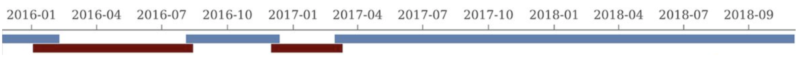

In this entry, I’m analyzing Brinch et al. (2020), a large DNA-sequencing study of raw influent samples from three Copenhagen treatment plants. 12-hour composite samples were collected “at irregular intervals” between 2015 and 2018; the sample processing protocol isn’t described in great detail, but samples were centrifuged and the pellet retained for extraction, a procedure that (as in Bengtsson-Palme) we expect to select against viruses. About half the samples were sequenced on an Illumina MiSeq, the rest on a NextSeq; “the change of sequencing platform was circumstantial and was not part of the experiment design.” The platform used varied in temporal blocks (blue = NextSeq):

The raw data
The Brinch dataset contained sample information from 322 samples, composed as follows:
Code
# Importing the data is a bit more complicated this time as the samples are split across two pipeline runsdata_dir_base<-"../data/2024-04-30_brinch"data_dirs<-paste(data_dir_base, c(1,2), sep="/")# Data input pathslibraries_paths<-file.path(data_dirs, "sample-metadata.csv")basic_stats_paths<-file.path(data_dirs, "qc_basic_stats.tsv.gz")adapter_stats_paths<-file.path(data_dirs, "qc_adapter_stats.tsv.gz")quality_base_stats_paths<-file.path(data_dirs, "qc_quality_base_stats.tsv.gz")quality_seq_stats_paths<-file.path(data_dirs, "qc_quality_sequence_stats.tsv.gz")instrument_path<-file.path(data_dir_base, "instruments.csv")# Import libraries and extract metadata from sample nameslibraries_raw<-lapply(libraries_paths, read_csv, show_col_types =FALSE)%>%bind_rowsinstruments<-read_csv(instrument_path, show_col_types =FALSE)%>%mutate(instrument =sub("^Illumina ", "", instrument))libraries<-libraries_raw%>%arrange(location)%>%mutate(location =fct_inorder(location))%>%mutate(year =year(date), month =gsub("-\\d+$", "", date))%>%arrange(location, date, sample)%>%mutate(sample=fct_inorder(sample), location_alias =ifelse(location=="Amager", "RL",ifelse(location=="Valby", "RD", "RA")))%>%group_by(location, month)%>%mutate(sample_alias =paste(location_alias, month, row_number(), sep="_"), sample_alias =fct_inorder(sample_alias))%>%left_join(instruments, by="library")# Make tablecount_samples<-libraries%>%group_by(location, year)%>%count%>%pivot_wider(names_from ="year", values_from="n")%>%rename(Location =location)count_samples
The 169 NextSeq libraries yielded 3.6M-63M (mean 23.8M) read pairs per sample, while the 153 MiSeq libraries yielded 10-7.4M (mean 2.3M) read pairs. The total number of read pairs across all instruments was 4.4B read pairs (1.27 terabases of sequence), of which 93% of read pairs (89% of bases) came from NextSeq runs.
In most samples, read qualities were high at the 5’ end of the read but tailed off substantially over the course of the read, especially in long MiSeq reads. A minority of MiSeq samples had poor read quality across the length of the read. Adapter levels were fairly low, but significant enough to require trimming. Duplicate levels were low (0-11%, mean 3%) in MiSeq libraries (unsurprising given their small size) but moderate (3-59%, mean 28%) in the larger NextSeq libraries.
The average fraction of reads lost at each stage in the preprocessing pipeline is shown in the following table. As expected given the observed difference in duplication levels, few reads were lost during deduplication in MiSeq libraries, while a somewhat larger (but still not huge) number were lost in NextSeq libraries. Very few reads were lost during ribodepletion, as expected for DNA sequencing libraries.
# Plot relative read losses during preprocessingg_reads_rel<-ggplot(n_reads_rel, aes(x=stage, color=instrument, group=sample))+geom_line(aes(y=p_reads_lost_abs_marginal))+scale_y_continuous("% Total Reads Lost", expand=c(0,0), labels =function(x)x*100)+scale_color_ins()+facet_wrap(~location, scales="free", ncol=3)+theme_kitg_reads_rel
Data cleaning was very successful at removing adapters and mostly successful at improving read qualities, though some libraries still dipped below my preferred quality thresholds later in the read:
According to FASTQC, cleaning + deduplication was very effective at reducing measured duplicate levels, which fell from an average of 28% to 8% in NextSeq libraries and from 3% to 1% in MiSeq samples:
As before, to assess the high-level composition of the reads, I ran the ribodepleted files through Kraken (using the Standard 16 database) and summarized the results with Bracken. Combining these results with the read counts above gives us a breakdown of the inferred composition of the samples:
# Plot composition of minor componentscomp_minor<-comp%>%filter(classification%in%c("Archaeal", "Viral", "Human", "Other"))palette_minor<-brewer.pal(9, "Set1")[6:9]g_comp_minor<-g_comp_base+geom_col(data=comp_minor, position ="stack", width=1)+scale_y_pc_reads()+scale_fill_manual(values=palette_minor, name ="Classification")g_comp_minor
In most samples, the majority of reads were either filtered, duplicates, or unassigned. Among assigned reads, the vast majority in most samples were bacterial, which is unsurprising given the sample processing protocols used. A few samples showed elevated levels of human reads, which might be real or due to experimenter contamination. Viral fraction averaged 0.41% in MiSeq reads and 0.34% in NextSeq reads.
As is common for DNA data, viral reads were overwhelmingly dominated by Caudoviricetes phages:
Code
# Get Kraken reportsreports_paths<-file.path(data_dirs, "kraken_reports.tsv.gz")reports<-lapply(reports_paths, read_tsv, show_col_types =FALSE)%>%bind_rows# Get viral taxonomyviral_taxa_path<-file.path(data_dir_base, "viral-taxids.tsv.gz")viral_taxa<-read_tsv(viral_taxa_path, show_col_types =FALSE)# Filter to viral taxakraken_reports_viral<-filter(reports, taxid%in%viral_taxa$taxid)%>%group_by(sample)%>%mutate(p_reads_viral =n_reads_clade/n_reads_clade[1])kraken_reports_viral_cleaned<-kraken_reports_viral%>%inner_join(libraries, by="sample")%>%select(-pc_reads_total, -n_reads_direct, -contains("minimizers"))%>%select(name, taxid, p_reads_viral, n_reads_clade, everything())viral_classes<-kraken_reports_viral_cleaned%>%filter(rank=="C")viral_families<-kraken_reports_viral_cleaned%>%filter(rank=="F")
Next, I investigated the human-infecting virus read content of these unenriched samples. A total of 17,448 reads were identified as putatively human-viral:
Looking into the composition of different read groups, a plurality of high-scoring false positives map to human alphaherpesvirus 1 strain RH2 according to Bowtie2. BLASTN maps these sequences to a variety of bacterial taxa, especially E. coli and various Klebsiella species. I’m already screening against one strain of E. coli, so if I wanted to tackle this I’d need to add more strains or another species, probably Klebsiella pneumoniae. However, in this case the scores are good enough that I don’t think it’s worth it.
# Get raw read countsread_counts_raw<-basic_stats_raw%>%select(sample, location, instrument, date, year, n_reads_raw =n_read_pairs)# Get HV read countsmrg_hv<-mrg%>%mutate(hv_status =assigned_hv|highscore)%>%rename(taxid_all =taxid, taxid =taxid_best)read_counts_hv<-mrg_hv%>%filter(hv_status)%>%group_by(sample)%>%count(name="n_reads_hv")read_counts<-read_counts_raw%>%left_join(read_counts_hv, by="sample")%>%mutate(n_reads_hv =replace_na(n_reads_hv, 0))# Aggregateread_counts_grp<-read_counts%>%group_by(location, year)%>%summarize(n_reads_raw =sum(n_reads_raw), n_reads_hv =sum(n_reads_hv), .groups="drop")%>%mutate(sample="All samples", year =as.character(year))read_counts_yr<-read_counts_grp%>%group_by(sample, year)%>%summarize(n_reads_raw =sum(n_reads_raw), n_reads_hv =sum(n_reads_hv), .groups="drop")%>%mutate(location ="All locations")read_counts_loc<-read_counts_grp%>%group_by(sample, location)%>%summarize(n_reads_raw =sum(n_reads_raw), n_reads_hv =sum(n_reads_hv), .groups="drop")%>%mutate(year ="All years")read_counts_tot<-read_counts_loc%>%group_by(sample, year)%>%summarize(n_reads_raw =sum(n_reads_raw), n_reads_hv =sum(n_reads_hv), .groups="drop")%>%mutate(location ="All locations")read_counts_agg<-bind_rows(read_counts_grp, read_counts_yr,read_counts_loc, read_counts_tot)%>%mutate(p_reads_hv =n_reads_hv/n_reads_raw, location =factor(location, levels =c(levels(libraries$location), "All locations")), year =factor(year, levels =c(as.character(2015:2018), "All years")))
Applying a disjunctive cutoff at S=20 identifies 16,967 read pairs as human-viral. This gives an overall relative HV abundance of \(3.88 \times 10^{-6}\). Measured RAs are somewhat lower on average in 2015, and higher than average in 2016, but overall year-on-year variation isn’t huge on a log scale:
Code
# Visualizeg_phv_agg<-ggplot(read_counts_agg, aes(x=year, color=location))+geom_point(aes(y=p_reads_hv))+scale_y_log10("Relative abundance of human virus reads", limits=c(1e-6, 1e-5))+scale_color_loc()+theme_kitg_phv_agg
This overall RA is somewhat lower than most RNA datasets I’ve previously analyzed, and on the low end for DNA datasets as well, probably due to the antiviral selection of the sample processing protocol used:
In investigating the taxonomy of human-infecting virus reads, I restricted my analysis to samples with more than 5 HV read pairs total across all viruses, to reduce noise arising from extremely low HV read counts in some samples. 15 samples, 4 from influent and 11 from primary sludge, met this criterion.
At the family level, most samples across all locations were overwhelmingly dominated by Adenoviridae, followed distantly by Polyomaviridae, Papillomaviridae and Poxviridae:
Code
# Get viral taxon names for putative HV readsviral_taxa$name[viral_taxa$taxid==249588]<-"Mamastrovirus"viral_taxa$name[viral_taxa$taxid==194960]<-"Kobuvirus"viral_taxa$name[viral_taxa$taxid==688449]<-"Salivirus"viral_taxa$name[viral_taxa$taxid==585893]<-"Picobirnaviridae"viral_taxa$name[viral_taxa$taxid==333922]<-"Betapapillomavirus"viral_taxa$name[viral_taxa$taxid==334207]<-"Betapapillomavirus 3"viral_taxa$name[viral_taxa$taxid==369960]<-"Porcine type-C oncovirus"viral_taxa$name[viral_taxa$taxid==333924]<-"Betapapillomavirus 2"viral_taxa$name[viral_taxa$taxid==687329]<-"Anelloviridae"viral_taxa$name[viral_taxa$taxid==325455]<-"Gammapapillomavirus"viral_taxa$name[viral_taxa$taxid==333750]<-"Alphapapillomavirus"viral_taxa$name[viral_taxa$taxid==694002]<-"Betacoronavirus"viral_taxa$name[viral_taxa$taxid==334202]<-"Mupapillomavirus"viral_taxa$name[viral_taxa$taxid==197911]<-"Alphainfluenzavirus"viral_taxa$name[viral_taxa$taxid==186938]<-"Respirovirus"viral_taxa$name[viral_taxa$taxid==333926]<-"Gammapapillomavirus 1"viral_taxa$name[viral_taxa$taxid==337051]<-"Betapapillomavirus 1"viral_taxa$name[viral_taxa$taxid==337043]<-"Alphapapillomavirus 4"viral_taxa$name[viral_taxa$taxid==694003]<-"Betacoronavirus 1"viral_taxa$name[viral_taxa$taxid==334204]<-"Mupapillomavirus 2"viral_taxa$name[viral_taxa$taxid==334208]<-"Betapapillomavirus 4"viral_taxa$name[viral_taxa$taxid==333928]<-"Gammapapillomavirus 2"viral_taxa$name[viral_taxa$taxid==337039]<-"Alphapapillomavirus 2"viral_taxa$name[viral_taxa$taxid==333929]<-"Gammapapillomavirus 3"viral_taxa$name[viral_taxa$taxid==337042]<-"Alphapapillomavirus 7"viral_taxa$name[viral_taxa$taxid==334203]<-"Mupapillomavirus 1"viral_taxa$name[viral_taxa$taxid==333757]<-"Alphapapillomavirus 8"viral_taxa$name[viral_taxa$taxid==337050]<-"Alphapapillomavirus 6"viral_taxa$name[viral_taxa$taxid==333767]<-"Alphapapillomavirus 3"viral_taxa$name[viral_taxa$taxid==333754]<-"Alphapapillomavirus 10"viral_taxa$name[viral_taxa$taxid==687363]<-"Torque teno virus 24"viral_taxa$name[viral_taxa$taxid==687342]<-"Torque teno virus 3"viral_taxa$name[viral_taxa$taxid==687359]<-"Torque teno virus 20"viral_taxa$name[viral_taxa$taxid==194441]<-"Primate T-lymphotropic virus 2"viral_taxa$name[viral_taxa$taxid==334209]<-"Betapapillomavirus 5"viral_taxa$name[viral_taxa$taxid==194965]<-"Aichivirus B"viral_taxa$name[viral_taxa$taxid==333930]<-"Gammapapillomavirus 4"viral_taxa$name[viral_taxa$taxid==337048]<-"Alphapapillomavirus 1"viral_taxa$name[viral_taxa$taxid==337041]<-"Alphapapillomavirus 9"viral_taxa$name[viral_taxa$taxid==337049]<-"Alphapapillomavirus 11"viral_taxa$name[viral_taxa$taxid==337044]<-"Alphapapillomavirus 5"# Filter samples and add viral taxa informationsamples_keep<-read_counts%>%filter(n_reads_hv>5)%>%pull(sample)mrg_hv_named<-mrg_hv%>%filter(sample%in%samples_keep)%>%left_join(viral_taxa, by="taxid")# Discover viral species & genera for HV readsraise_rank<-function(read_db, taxid_db, out_rank="species", verbose=FALSE){# Get higher ranks than search rankranks<-c("subspecies", "species", "subgenus", "genus", "subfamily", "family", "suborder", "order", "class", "subphylum", "phylum", "kingdom", "superkingdom")rank_match<-which.max(ranks==out_rank)high_ranks<-ranks[rank_match:length(ranks)]# Merge read DB and taxid DBreads<-read_db%>%select(-parent_taxid, -rank, -name)%>%left_join(taxid_db, by="taxid")# Extract sequences that are already at appropriate rankreads_rank<-filter(reads, rank==out_rank)# Drop sequences at a higher rank and return unclassified sequencesreads_norank<-reads%>%filter(rank!=out_rank, !rank%in%high_ranks, !is.na(taxid))while(nrow(reads_norank)>0){# As long as there are unclassified sequences...# Promote read taxids and re-merge with taxid DB, then re-classify and filterreads_remaining<-reads_norank%>%mutate(taxid =parent_taxid)%>%select(-parent_taxid, -rank, -name)%>%left_join(taxid_db, by="taxid")reads_rank<-reads_remaining%>%filter(rank==out_rank)%>%bind_rows(reads_rank)reads_norank<-reads_remaining%>%filter(rank!=out_rank, !rank%in%high_ranks, !is.na(taxid))}# Finally, extract and append reads that were excluded during the processreads_dropped<-reads%>%filter(!seq_id%in%reads_rank$seq_id)reads_out<-reads_rank%>%bind_rows(reads_dropped)%>%select(-parent_taxid, -rank, -name)%>%left_join(taxid_db, by="taxid")return(reads_out)}hv_reads_species<-raise_rank(mrg_hv_named, viral_taxa, "species")hv_reads_genus<-raise_rank(mrg_hv_named, viral_taxa, "genus")hv_reads_family<-raise_rank(mrg_hv_named, viral_taxa, "family")
Code
threshold_major_family<-0.08# Count reads for each human-viral familyhv_family_counts<-hv_reads_family%>%group_by(sample, location, instrument, year, name, taxid)%>%count(name ="n_reads_hv")%>%group_by(sample, location, instrument, year)%>%mutate(p_reads_hv =n_reads_hv/sum(n_reads_hv))# Identify high-ranking families and group othershv_family_major_tab<-hv_family_counts%>%group_by(name)%>%filter(p_reads_hv==max(p_reads_hv))%>%filter(row_number()==1)%>%arrange(desc(p_reads_hv))%>%filter(p_reads_hv>threshold_major_family)hv_family_counts_major<-hv_family_counts%>%mutate(name_display =ifelse(name%in%hv_family_major_tab$name, name, "Other"))%>%group_by(sample, location, instrument, year, name_display)%>%summarize(n_reads_hv =sum(n_reads_hv), p_reads_hv =sum(p_reads_hv), .groups="drop")%>%mutate(name_display =factor(name_display, levels =c(hv_family_major_tab$name, "Other")))hv_family_counts_display<-hv_family_counts_major%>%rename(p_reads =p_reads_hv, classification =name_display)# Plotg_hv_family<-g_comp_base+geom_col(data=hv_family_counts_display, position ="stack", width=1)+scale_y_continuous(name="% HV Reads", limits=c(0,1.01), breaks =seq(0,1,0.2), expand=c(0,0), labels =function(y)y*100)+scale_fill_manual(values=palette_viral, name ="Viral family")+labs(title="Family composition of human-viral reads")+guides(fill=guide_legend(ncol=4))+theme(plot.title =element_text(size=rel(1.4), hjust=0, face="plain"))g_hv_family
Code
# Get most prominent families for texthv_family_collate<-hv_family_counts%>%group_by(name, taxid)%>%summarize(n_reads_tot =sum(n_reads_hv), p_reads_mean =mean(p_reads_hv), .groups="drop")%>%arrange(desc(n_reads_tot))
Adenoviruses were in turn overwhelmingly dominated by human mastadenovirus F:
Code
threshold_major_species<-0.1taxid_adeno<-10508# Get set of adenoviridae readsadeno_samples<-hv_family_counts%>%filter(taxid==taxid_adeno)%>%filter(p_reads_hv>=0.1)%>%pull(sample)adeno_ids<-hv_reads_family%>%filter(taxid==taxid_adeno, sample%in%adeno_samples)%>%pull(seq_id)# Count reads for each adenoviridae speciesadeno_species_counts<-hv_reads_species%>%filter(seq_id%in%adeno_ids)%>%group_by(sample, location, instrument, name, taxid)%>%count(name ="n_reads_hv")%>%group_by(sample, location, instrument)%>%mutate(p_reads_adeno =n_reads_hv/sum(n_reads_hv))# Identify high-ranking families and group othersadeno_species_major_tab<-adeno_species_counts%>%group_by(name)%>%filter(p_reads_adeno==max(p_reads_adeno))%>%filter(row_number()==1)%>%arrange(desc(p_reads_adeno))%>%filter(p_reads_adeno>threshold_major_species)adeno_species_counts_major<-adeno_species_counts%>%mutate(name_display =ifelse(name%in%adeno_species_major_tab$name, name, "Other"))%>%group_by(sample, location, instrument, name_display)%>%summarize(n_reads_adeno =sum(n_reads_hv), p_reads_adeno =sum(p_reads_adeno), .groups="drop")%>%mutate(name_display =factor(name_display, levels =c(adeno_species_major_tab$name, "Other")))adeno_species_counts_display<-adeno_species_counts_major%>%rename(p_reads =p_reads_adeno, classification =name_display)# Plotg_adeno_species<-g_comp_base+geom_col(data=adeno_species_counts_display, position ="stack", width=1)+scale_y_continuous(name="% Adenoviridae Reads", limits=c(0,1.01), breaks =seq(0,1,0.2), expand=c(0,0), labels =function(y)y*100)+scale_fill_manual(values=palette_viral, name ="Viral species")+labs(title="Species composition of Adenoviridae reads")+guides(fill=guide_legend(ncol=3))+theme(plot.title =element_text(size=rel(1.4), hjust=0, face="plain"))g_adeno_species
Code
# Get most prominent species for textadeno_species_collate<-adeno_species_counts%>%group_by(name, taxid)%>%summarize(n_reads_tot =sum(n_reads_hv), p_reads_mean =mean(p_reads_adeno), .groups="drop")%>%arrange(desc(n_reads_tot))
In investigating more minor viral families, to avoid distortions from a few rare reads, I restricted myself to samples where that family made up at least 10% of human-viral reads:
Code
threshold_major_species<-0.1taxid_polyoma<-151341# Get set of polyomaviridae readspolyoma_samples<-hv_family_counts%>%filter(taxid==taxid_polyoma)%>%filter(p_reads_hv>=0.1)%>%pull(sample)polyoma_ids<-hv_reads_family%>%filter(taxid==taxid_polyoma, sample%in%polyoma_samples)%>%pull(seq_id)# Count reads for each polyomaviridae speciespolyoma_species_counts<-hv_reads_species%>%filter(seq_id%in%polyoma_ids)%>%group_by(sample, location, instrument, name, taxid)%>%count(name ="n_reads_hv")%>%group_by(sample, location, instrument)%>%mutate(p_reads_polyoma =n_reads_hv/sum(n_reads_hv))# Identify high-ranking families and group otherspolyoma_species_major_tab<-polyoma_species_counts%>%group_by(name)%>%filter(p_reads_polyoma==max(p_reads_polyoma))%>%filter(row_number()==1)%>%arrange(desc(p_reads_polyoma))%>%filter(p_reads_polyoma>threshold_major_species)polyoma_species_counts_major<-polyoma_species_counts%>%mutate(name_display =ifelse(name%in%polyoma_species_major_tab$name, name, "Other"))%>%group_by(sample, location, instrument, name_display)%>%summarize(n_reads_polyoma =sum(n_reads_hv), p_reads_polyoma =sum(p_reads_polyoma), .groups="drop")%>%mutate(name_display =factor(name_display, levels =c(polyoma_species_major_tab$name, "Other")))polyoma_species_counts_display<-polyoma_species_counts_major%>%rename(p_reads =p_reads_polyoma, classification =name_display)# Plotg_polyoma_species<-g_comp_base+geom_col(data=polyoma_species_counts_display, position ="stack", width=1)+scale_y_continuous(name="% Polyomaviridae Reads", limits=c(0,1.01), breaks =seq(0,1,0.2), expand=c(0,0), labels =function(y)y*100)+scale_fill_manual(values=palette_viral, name ="Viral species")+labs(title="Species composition of Polyomaviridae reads")+guides(fill=guide_legend(ncol=3))+theme(plot.title =element_text(size=rel(1.4), hjust=0, face="plain"))g_polyoma_species
Code
# Get most prominent species for textpolyoma_species_collate<-polyoma_species_counts%>%group_by(name, taxid)%>%summarize(n_reads_tot =sum(n_reads_hv), p_reads_mean =mean(p_reads_polyoma), .groups="drop")%>%arrange(desc(n_reads_tot))
Code
threshold_major_species<-0.35taxid_papilloma<-151340# Get set of papillomaviridae readspapilloma_samples<-hv_family_counts%>%filter(taxid==taxid_papilloma)%>%filter(p_reads_hv>=0.1)%>%pull(sample)papilloma_ids<-hv_reads_family%>%filter(taxid==taxid_papilloma, sample%in%papilloma_samples)%>%pull(seq_id)# Count reads for each papillomaviridae speciespapilloma_species_counts<-hv_reads_species%>%filter(seq_id%in%papilloma_ids)%>%group_by(sample, location, instrument, name, taxid)%>%count(name ="n_reads_hv")%>%group_by(sample, location, instrument)%>%mutate(p_reads_papilloma =n_reads_hv/sum(n_reads_hv))# Identify high-ranking families and group otherspapilloma_species_major_tab<-papilloma_species_counts%>%group_by(name)%>%filter(p_reads_papilloma==max(p_reads_papilloma))%>%filter(row_number()==1)%>%arrange(desc(p_reads_papilloma))%>%filter(p_reads_papilloma>threshold_major_species)papilloma_species_counts_major<-papilloma_species_counts%>%mutate(name_display =ifelse(name%in%papilloma_species_major_tab$name, name, "Other"))%>%group_by(sample, location, instrument, name_display)%>%summarize(n_reads_papilloma =sum(n_reads_hv), p_reads_papilloma =sum(p_reads_papilloma), .groups="drop")%>%mutate(name_display =factor(name_display, levels =c(papilloma_species_major_tab$name, "Other")))papilloma_species_counts_display<-papilloma_species_counts_major%>%rename(p_reads =p_reads_papilloma, classification =name_display)# Plotg_papilloma_species<-g_comp_base+geom_col(data=papilloma_species_counts_display, position ="stack", width=1)+scale_y_continuous(name="% Papillomaviridae Reads", limits=c(0,1.01), breaks =seq(0,1,0.2), expand=c(0,0), labels =function(y)y*100)+scale_fill_manual(values=palette_viral, name ="Viral species")+labs(title="Species composition of Papillomaviridae reads")+guides(fill=guide_legend(ncol=3))+theme(plot.title =element_text(size=rel(1.4), hjust=0, face="plain"))g_papilloma_species
Code
# Get most prominent species for textpapilloma_species_collate<-papilloma_species_counts%>%group_by(name, taxid)%>%summarize(n_reads_tot =sum(n_reads_hv), p_reads_mean =mean(p_reads_papilloma), .groups="drop")%>%arrange(desc(n_reads_tot))
Code
threshold_major_species<-0.1taxid_pox<-10240# Get set of poxviridae readspox_samples<-hv_family_counts%>%filter(taxid==taxid_pox)%>%filter(p_reads_hv>=0.1)%>%pull(sample)pox_ids<-hv_reads_family%>%filter(taxid==taxid_pox, sample%in%pox_samples)%>%pull(seq_id)# Count reads for each poxviridae speciespox_species_counts<-hv_reads_species%>%filter(seq_id%in%pox_ids)%>%group_by(sample, location, instrument, name, taxid)%>%count(name ="n_reads_hv")%>%group_by(sample, location, instrument)%>%mutate(p_reads_pox =n_reads_hv/sum(n_reads_hv))# Identify high-ranking families and group otherspox_species_major_tab<-pox_species_counts%>%group_by(name)%>%filter(p_reads_pox==max(p_reads_pox))%>%filter(row_number()==1)%>%arrange(desc(p_reads_pox))%>%filter(p_reads_pox>threshold_major_species)pox_species_counts_major<-pox_species_counts%>%mutate(name_display =ifelse(name%in%pox_species_major_tab$name, name, "Other"))%>%group_by(sample, location, instrument, name_display)%>%summarize(n_reads_pox =sum(n_reads_hv), p_reads_pox =sum(p_reads_pox), .groups="drop")%>%mutate(name_display =factor(name_display, levels =c(pox_species_major_tab$name, "Other")))pox_species_counts_display<-pox_species_counts_major%>%rename(p_reads =p_reads_pox, classification =name_display)# Plotg_pox_species<-g_comp_base+geom_col(data=pox_species_counts_display, position ="stack", width=1)+scale_y_continuous(name="% Poxviridae Reads", limits=c(0,1.01), breaks =seq(0,1,0.2), expand=c(0,0), labels =function(y)y*100)+scale_fill_manual(values=palette_viral, name ="Viral species")+labs(title="Species composition of Poxviridae reads")+guides(fill=guide_legend(ncol=3))+theme(plot.title =element_text(size=rel(1.4), hjust=0, face="plain"))g_pox_species
Code
# Get most prominent species for textpox_species_collate<-pox_species_counts%>%group_by(name, taxid)%>%summarize(n_reads_tot =sum(n_reads_hv), p_reads_mean =mean(p_reads_pox), .groups="drop")%>%arrange(desc(n_reads_tot))
Code
threshold_major_species<-0.1taxid_herpes<-10292# Get set of herpesviridae readsherpes_samples<-hv_family_counts%>%filter(taxid==taxid_herpes)%>%filter(p_reads_hv>=0.1)%>%pull(sample)herpes_ids<-hv_reads_family%>%filter(taxid==taxid_herpes, sample%in%herpes_samples)%>%pull(seq_id)# Count reads for each herpesviridae speciesherpes_species_counts<-hv_reads_species%>%filter(seq_id%in%herpes_ids)%>%group_by(sample, location, instrument, name, taxid)%>%count(name ="n_reads_hv")%>%group_by(sample, location, instrument)%>%mutate(p_reads_herpes =n_reads_hv/sum(n_reads_hv))# Identify high-ranking families and group othersherpes_species_major_tab<-herpes_species_counts%>%group_by(name)%>%filter(p_reads_herpes==max(p_reads_herpes))%>%filter(row_number()==1)%>%arrange(desc(p_reads_herpes))%>%filter(p_reads_herpes>threshold_major_species)herpes_species_counts_major<-herpes_species_counts%>%mutate(name_display =ifelse(name%in%herpes_species_major_tab$name, name, "Other"))%>%group_by(sample, location, instrument, name_display)%>%summarize(n_reads_herpes =sum(n_reads_hv), p_reads_herpes =sum(p_reads_herpes), .groups="drop")%>%mutate(name_display =factor(name_display, levels =c(herpes_species_major_tab$name, "Other")))herpes_species_counts_display<-herpes_species_counts_major%>%rename(p_reads =p_reads_herpes, classification =name_display)# Plotg_herpes_species<-g_comp_base+geom_col(data=herpes_species_counts_display, position ="stack", width=1)+scale_y_continuous(name="% Herpesviridae Reads", limits=c(0,1.01), breaks =seq(0,1,0.2), expand=c(0,0), labels =function(y)y*100)+scale_fill_manual(values=palette_viral, name ="Viral species")+labs(title="Species composition of Herpesviridae reads")+guides(fill=guide_legend(ncol=3))+theme(plot.title =element_text(size=rel(1.4), hjust=0, face="plain"))g_herpes_species
Code
# Get most prominent species for textherpes_species_collate<-herpes_species_counts%>%group_by(name, taxid)%>%summarize(n_reads_tot =sum(n_reads_hv), p_reads_mean =mean(p_reads_herpes), .groups="drop")%>%arrange(desc(n_reads_tot))
In the latter case, some subset of human alphaherpesvirus 1 reads will be arising from strain RH2, which we know to be dominated by false positive hits. Digging deeper, we see that these are essentially all of the alphaherpesvirus 1 reads. Hence, these herpesvirus read counts need to be treated with significant skepticism, at least until the RH2 problem is fixed.
Code
# Count reads for each herpesviridae taxonherpes_species_counts<-mrg_hv_named%>%filter(seq_id%in%herpes_ids)%>%group_by(sample, location, instrument, name, taxid)%>%count(name ="n_reads_hv")%>%group_by(sample, location, instrument)%>%mutate(p_reads_herpes =n_reads_hv/sum(n_reads_hv))# Identify high-ranking families and group othersherpes_species_major_tab<-herpes_species_counts%>%group_by(name)%>%filter(p_reads_herpes==max(p_reads_herpes))%>%filter(row_number()==1)%>%arrange(desc(p_reads_herpes))%>%filter(p_reads_herpes>threshold_major_species)herpes_species_counts_major<-herpes_species_counts%>%mutate(name_display =ifelse(name%in%herpes_species_major_tab$name, name, "Other"))%>%group_by(sample, location, instrument, name_display)%>%summarize(n_reads_herpes =sum(n_reads_hv), p_reads_herpes =sum(p_reads_herpes), .groups="drop")%>%mutate(name_display =factor(name_display, levels =c(herpes_species_major_tab$name, "Other")))herpes_species_counts_display<-herpes_species_counts_major%>%rename(p_reads =p_reads_herpes, classification =name_display)# Plotg_herpes_species<-g_comp_base+geom_col(data=herpes_species_counts_display, position ="stack", width=1)+scale_y_continuous(name="% herpesviridae Reads", limits=c(0,1.01), breaks =seq(0,1,0.2), expand=c(0,0), labels =function(y)y*100)+scale_fill_manual(values=palette_viral, name ="Viral species")+labs(title="Species composition of herpesviridae reads")+guides(fill=guide_legend(ncol=3))+theme(plot.title =element_text(size=rel(1.4), hjust=0, face="plain"))g_herpes_species
Code
# Get most prominent species for textherpes_species_collate<-herpes_species_counts%>%group_by(name, taxid)%>%summarize(n_reads_tot =sum(n_reads_hv), p_reads_mean =mean(p_reads_herpes), .groups="drop")%>%arrange(desc(n_reads_tot))
Finally, here again are the overall relative abundances of the specific viral genera I picked out manually in my last entry. Note that, as Simplexvirus includes human alphaherpesvirus 1, that count should be treated with significant caution until the RH2 problem is fixed.
Warning: Transformation introduced infinite values in continuous x-axis
Conclusion
This is the first major DNA dataset from wastewater that I’ve analyzed using this pipeline, and at first I was nervous about how it would perform. Most of the optimization I’ve done on the HV detection pipeline has been on RNA datasets, so I was concerned that we would see major problems with false positives that we haven’t encountered with other datasets. In the event, however, things went well. There were some preventable false positives (especially from human alphaherpesvirus 1 strain RH2) but they were rare enough relative to correct assignments that the pipeline’s overall performance scores were very high. Overall I wouldn’t trust the performance of this pipeline on DNA data much less than on RNA.
In terms of the results themselves, it was interesting to see the remarkable preponderance of adenoviruses, and especially human mastadenovirus F, among human-infecting viruses. This isn’t a pattern we’ve seen in RNA data, and it will be interesting to see if it persists in other DNA datasets.
Source Code
---title: "Workflow analysis of Brinch et al. (2020)"subtitle: "Wastewater from Copenhagen."author: "Will Bradshaw"date: 2024-04-30format: html: code-fold: true code-tools: true code-link: true df-print: pagededitor: visualtitle-block-banner: black---```{r}#| label: preamble#| include: false# Load packageslibrary(tidyverse)library(cowplot)library(patchwork)library(fastqcr)library(RColorBrewer)source("../scripts/aux_plot-theme.R")# GGplot themes and scalestheme_base <- theme_base +theme(aspect.ratio =NULL)theme_rotate <- theme_base +theme(axis.text.x =element_text(hjust =1, angle =45),)theme_kit <- theme_rotate +theme(axis.title.x =element_blank(),)theme_xblank <- theme_kit +theme(axis.text.x =element_blank())tnl <-theme(legend.position ="none")```In this entry, I'm analyzing [Brinch et al. (2020)](https://doi.org/10.1128%2FmSystems.00841-20), a large DNA-sequencing study of raw influent samples from three Copenhagen treatment plants. 12-hour composite samples were collected "at irregular intervals" between 2015 and 2018; the sample processing protocol isn't described in great detail, but samples were centrifuged and the pellet retained for extraction, a procedure that (as in Bengtsson-Palme) we expect to select against viruses. About half the samples were sequenced on an Illumina MiSeq, the rest on a NextSeq; “the change of sequencing platform was circumstantial and was not part of the experiment design.” The platform used varied in temporal blocks (blue = NextSeq):# The raw dataThe Brinch dataset contained sample information from 322 samples, composed as follows:```{r}#| warning: false#| label: import-qc-data# Importing the data is a bit more complicated this time as the samples are split across two pipeline runsdata_dir_base <-"../data/2024-04-30_brinch"data_dirs <-paste(data_dir_base, c(1,2), sep="/")# Data input pathslibraries_paths <-file.path(data_dirs, "sample-metadata.csv")basic_stats_paths <-file.path(data_dirs, "qc_basic_stats.tsv.gz")adapter_stats_paths <-file.path(data_dirs, "qc_adapter_stats.tsv.gz")quality_base_stats_paths <-file.path(data_dirs, "qc_quality_base_stats.tsv.gz")quality_seq_stats_paths <-file.path(data_dirs, "qc_quality_sequence_stats.tsv.gz")instrument_path <-file.path(data_dir_base, "instruments.csv")# Import libraries and extract metadata from sample nameslibraries_raw <-lapply(libraries_paths, read_csv, show_col_types =FALSE) %>% bind_rowsinstruments <-read_csv(instrument_path, show_col_types =FALSE) %>%mutate(instrument =sub("^Illumina ", "", instrument))libraries <- libraries_raw %>%arrange(location) %>%mutate(location =fct_inorder(location)) %>%mutate(year =year(date),month =gsub("-\\d+$", "", date)) %>%arrange(location, date, sample) %>%mutate(sample=fct_inorder(sample),location_alias =ifelse(location =="Amager", "RL",ifelse(location =="Valby", "RD", "RA"))) %>%group_by(location, month) %>%mutate(sample_alias =paste(location_alias, month, row_number(), sep="_"),sample_alias =fct_inorder(sample_alias)) %>%left_join(instruments, by="library")# Make tablecount_samples <- libraries %>%group_by(location, year) %>% count %>%pivot_wider(names_from ="year", values_from="n") %>%rename(Location = location)count_samples``````{r}#| label: process-qc-data# Import QC datastages <-c("raw_concat", "cleaned", "dedup", "ribo_initial", "ribo_secondary")import_basic <-function(paths){lapply(paths, read_tsv, show_col_types =FALSE) %>% bind_rows %>%inner_join(libraries, by="sample") %>%arrange(location, sample_alias, sample) %>%mutate(stage =factor(stage, levels = stages),sample =fct_inorder(sample))}import_basic_paired <-function(paths){import_basic(paths) %>%arrange(read_pair) %>%mutate(read_pair =fct_inorder(as.character(read_pair)))}basic_stats <-import_basic(basic_stats_paths)adapter_stats <-import_basic_paired(adapter_stats_paths)quality_base_stats <-import_basic_paired(quality_base_stats_paths)quality_seq_stats <-import_basic_paired(quality_seq_stats_paths)# Filter to raw databasic_stats_raw <- basic_stats %>%filter(stage =="raw_concat")adapter_stats_raw <- adapter_stats %>%filter(stage =="raw_concat")quality_base_stats_raw <- quality_base_stats %>%filter(stage =="raw_concat")quality_seq_stats_raw <- quality_seq_stats %>%filter(stage =="raw_concat")# Get key values for readoutraw_read_counts <- basic_stats_raw %>%group_by(instrument) %>%summarize(n_lib =n(), rmin =min(n_read_pairs), rmax=max(n_read_pairs),rmean=mean(n_read_pairs), rtot =sum(n_read_pairs),btot =sum(n_bases_approx),dmin =min(percent_duplicates), dmax=max(percent_duplicates),dmean=mean(percent_duplicates), .groups ="drop")```The 169 NextSeq libraries yielded 3.6M-63M (mean 23.8M) read pairs per sample, while the 153 MiSeq libraries yielded 10-7.4M (mean 2.3M) read pairs. The total number of read pairs across all instruments was 4.4B read pairs (1.27 terabases of sequence), of which 93% of read pairs (89% of bases) came from NextSeq runs.```{r}#| fig-width: 9#| warning: false#| label: plot-basic-stats# Prepare databasic_stats_raw_metrics <- basic_stats_raw %>%select(sample, date, location, instrument,`# Read pairs`= n_read_pairs,`Total base pairs\n(approx)`= n_bases_approx,`% Duplicates\n(FASTQC)`= percent_duplicates) %>%pivot_longer(-(sample:instrument), names_to ="metric", values_to ="value") %>%mutate(metric =fct_inorder(metric))# Set up plot templatesscale_fill_loc <- purrr::partial(scale_fill_brewer, palette="Set1", name="Location")scale_fill_ins <- purrr::partial(scale_fill_brewer, palette="Dark2", name="Instrument")g_basic <-ggplot(basic_stats_raw_metrics, aes(x=date, y=value, fill=instrument, group=interaction(location,date))) +geom_col(position ="dodge") +scale_y_continuous(expand=c(0,0)) +expand_limits(y=c(0,100)) +scale_fill_ins() +facet_grid(metric~location, scales ="free", space="free_x", switch="y") + theme_kit +theme(axis.title.y =element_blank(),strip.text.y =element_text(face="plain") )g_basic```In most samples, read qualities were high at the 5' end of the read but tailed off substantially over the course of the read, especially in long MiSeq reads. A minority of MiSeq samples had poor read quality across the length of the read. Adapter levels were fairly low, but significant enough to require trimming. Duplicate levels were low (0-11%, mean 3%) in MiSeq libraries (unsurprising given their small size) but moderate (3-59%, mean 28%) in the larger NextSeq libraries.```{r}#| label: plot-raw-quality# Set up plotting templatesscale_color_loc <- purrr::partial(scale_color_brewer, palette="Set1", name="Location")scale_color_ins <- purrr::partial(scale_color_brewer, palette="Dark2", name="Instrument")g_qual_raw <-ggplot(mapping=aes(color=instrument, linetype=read_pair, group=interaction(sample,read_pair))) +scale_color_ins() +scale_linetype_discrete(name ="Read Pair") +guides(color=guide_legend(nrow=2,byrow=TRUE),linetype =guide_legend(nrow=2,byrow=TRUE)) + theme_base# Visualize adaptersrmax <-240g_adapters_raw <- g_qual_raw +geom_line(aes(x=position, y=pc_adapters), data=adapter_stats_raw) +scale_y_continuous(name="% Adapters", limits=c(0,NA),breaks =seq(0,100,1), expand=c(0,0)) +scale_x_continuous(name="Position", limits=c(0,NA),breaks=seq(0,rmax,20), expand=c(0,0)) +facet_grid(.~adapter) +theme(axis.text.x =element_text(angle=45, hjust=1))g_adapters_raw# Visualize qualityg_quality_base_raw <- g_qual_raw +geom_hline(yintercept=25, linetype="dashed", color="red") +geom_hline(yintercept=30, linetype="dashed", color="red") +geom_line(aes(x=position, y=mean_phred_score), data=quality_base_stats_raw) +scale_y_continuous(name="Mean Phred score", expand=c(0,0), limits=c(0,45)) +scale_x_continuous(name="Position", limits=c(0,NA),breaks=seq(0,rmax,20), expand=c(0,0))g_quality_base_rawg_quality_seq_raw <- g_qual_raw +geom_vline(xintercept=25, linetype="dashed", color="red") +geom_vline(xintercept=30, linetype="dashed", color="red") +geom_line(aes(x=mean_phred_score, y=n_sequences), data=quality_seq_stats_raw) +scale_x_continuous(name="Mean Phred score", expand=c(0,0)) +scale_y_continuous(name="# Sequences", expand=c(0,0))g_quality_seq_raw```# PreprocessingThe average fraction of reads lost at each stage in the preprocessing pipeline is shown in the following table. As expected given the observed difference in duplication levels, few reads were lost during deduplication in MiSeq libraries, while a somewhat larger (but still not huge) number were lost in NextSeq libraries. Very few reads were lost during ribodepletion, as expected for DNA sequencing libraries.```{r}#| label: preproc-tablen_reads_rel <- basic_stats %>%select(sample, sample_alias, location, date, instrument, percent_duplicates, n_read_pairs, stage) %>%group_by(sample) %>%arrange(sample, stage) %>%mutate(p_reads_retained =replace_na(n_read_pairs /lag(n_read_pairs), 0),p_reads_lost =1- p_reads_retained,p_reads_retained_abs = n_read_pairs / n_read_pairs[1],p_reads_lost_abs =1-p_reads_retained_abs,p_reads_lost_abs_marginal =replace_na(p_reads_lost_abs -lag(p_reads_lost_abs), 0))n_reads_rel_display <- n_reads_rel %>%group_by(Instrument=instrument, Stage=stage) %>%summarize(`% Total Reads Lost (Cumulative)`=paste0(round(min(p_reads_lost_abs*100),1), "-", round(max(p_reads_lost_abs*100),1), " (mean ", round(mean(p_reads_lost_abs*100),1), ")"),`% Total Reads Lost (Marginal)`=paste0(round(min(p_reads_lost_abs_marginal*100),1), "-", round(max(p_reads_lost_abs_marginal*100),1), " (mean ", round(mean(p_reads_lost_abs_marginal*100),1), ")"), .groups="drop") %>%filter(Stage !="raw_concat") %>%mutate(Stage = Stage %>% as.numeric %>%factor(labels=c("Trimming & filtering", "Deduplication", "Initial ribodepletion", "Secondary ribodepletion")))n_reads_rel_display``````{r}#| label: preproc-figures#| warning: false#| fig-height: 4#| fig-width: 6g_stage_trace <-ggplot(basic_stats, aes(x=stage, color=instrument, group=sample)) +scale_color_ins() +facet_wrap(~location, scales="free", ncol=3) + theme_kit# Plot reads over preprocessingg_reads_stages <- g_stage_trace +geom_line(aes(y=n_read_pairs)) +scale_y_continuous("# Read pairs", expand=c(0,0), limits=c(0,NA))g_reads_stages# Plot relative read losses during preprocessingg_reads_rel <-ggplot(n_reads_rel, aes(x=stage, color=instrument, group=sample)) +geom_line(aes(y=p_reads_lost_abs_marginal)) +scale_y_continuous("% Total Reads Lost", expand=c(0,0), labels =function(x) x*100) +scale_color_ins() +facet_wrap(~location, scales="free", ncol=3) + theme_kitg_reads_rel```Data cleaning was very successful at removing adapters and mostly successful at improving read qualities, though some libraries still dipped below my preferred quality thresholds later in the read:```{r}#| warning: false#| label: plot-quality#| fig-height: 7g_qual <-ggplot(mapping=aes(color=instrument, linetype=read_pair, group=interaction(sample,read_pair))) +scale_color_ins() +scale_linetype_discrete(name ="Read Pair") +guides(color=guide_legend(nrow=2,byrow=TRUE),linetype =guide_legend(nrow=2,byrow=TRUE)) + theme_base# Visualize adaptersg_adapters <- g_qual +geom_line(aes(x=position, y=pc_adapters), data=adapter_stats) +scale_y_continuous(name="% Adapters", limits=c(0,20),breaks =seq(0,50,10), expand=c(0,0)) +scale_x_continuous(name="Position", limits=c(0,NA),breaks=seq(0,140,20), expand=c(0,0)) +facet_grid(stage~adapter)g_adapters# Visualize qualityg_quality_base <- g_qual +geom_hline(yintercept=25, linetype="dashed", color="red") +geom_hline(yintercept=30, linetype="dashed", color="red") +geom_line(aes(x=position, y=mean_phred_score), data=quality_base_stats) +scale_y_continuous(name="Mean Phred score", expand=c(0,0), limits=c(10,45)) +scale_x_continuous(name="Position", limits=c(0,NA),breaks=seq(0,140,20), expand=c(0,0)) +facet_grid(stage~.)g_quality_baseg_quality_seq <- g_qual +geom_vline(xintercept=25, linetype="dashed", color="red") +geom_vline(xintercept=30, linetype="dashed", color="red") +geom_line(aes(x=mean_phred_score, y=n_sequences), data=quality_seq_stats) +scale_x_continuous(name="Mean Phred score", expand=c(0,0)) +scale_y_continuous(name="# Sequences", expand=c(0,0)) +facet_grid(stage~.)g_quality_seq```According to FASTQC, cleaning + deduplication was very effective at reducing measured duplicate levels, which fell from an average of 28% to 8% in NextSeq libraries and from 3% to 1% in MiSeq samples:```{r}#| label: preproc-dedup#| fig-height: 3.5#| fig-width: 6stage_dup <- basic_stats %>%group_by(instrument,stage) %>%summarize(dmin =min(percent_duplicates), dmax=max(percent_duplicates),dmean=mean(percent_duplicates), .groups ="drop")g_dup_stages <- g_stage_trace +geom_line(aes(y=percent_duplicates)) +scale_y_continuous("% Duplicates", limits=c(0,NA), expand=c(0,0))g_dup_stagesg_readlen_stages <- g_stage_trace +geom_line(aes(y=mean_seq_len)) +scale_y_continuous("Mean read length (nt)", expand=c(0,0), limits=c(0,NA))g_readlen_stages```# High-level compositionAs before, to assess the high-level composition of the reads, I ran the ribodepleted files through Kraken (using the Standard 16 database) and summarized the results with Bracken. Combining these results with the read counts above gives us a breakdown of the inferred composition of the samples:```{r}#| label: prepare-compositionclassifications <-c("Filtered", "Duplicate", "Ribosomal", "Unassigned","Bacterial", "Archaeal", "Viral", "Human")# Import composition datacomp_paths <-file.path(data_dirs, "taxonomic_composition.tsv.gz")comp <-lapply(comp_paths, read_tsv, show_col_types =FALSE) %>% bind_rows %>%left_join(libraries, by="sample") %>%mutate(classification =factor(classification, levels = classifications),n_reads =replace_na(n_reads, 0)) %>%group_by(sample) %>%mutate(p_reads = n_reads/sum(n_reads))# Summarize compositionread_comp_summ <- comp %>%group_by(location, instrument, classification) %>%summarize(n_reads =sum(n_reads), .groups ="drop_last") %>%mutate(n_reads =replace_na(n_reads,0),p_reads = n_reads/sum(n_reads),pc_reads = p_reads*100)``````{r}#| label: plot-composition-all#| fig-height: 7#| fig-width: 8# Prepare plotting templatesg_comp_base <-ggplot(mapping=aes(x=sample, y=p_reads, fill=classification)) +facet_wrap(instrument~location, scales ="free_x", ncol=3,labeller =label_wrap_gen(multi_line=FALSE, width=20)) + theme_xblankscale_y_pc_reads <- purrr::partial(scale_y_continuous, name ="% Reads",expand =c(0,0), labels =function(y) y*100)# Plot overall compositiong_comp <- g_comp_base +geom_col(data = comp, position ="stack", width=1) +scale_y_pc_reads(limits =c(0,1.01), breaks =seq(0,1,0.2)) +scale_fill_brewer(palette ="Set1", name ="Classification")g_comp# Plot composition of minor componentscomp_minor <- comp %>%filter(classification %in%c("Archaeal", "Viral", "Human", "Other"))palette_minor <-brewer.pal(9, "Set1")[6:9]g_comp_minor <- g_comp_base +geom_col(data=comp_minor, position ="stack", width=1) +scale_y_pc_reads() +scale_fill_manual(values=palette_minor, name ="Classification")g_comp_minor``````{r}#| label: composition-summaryp_reads_summ_group <- comp %>%mutate(classification =ifelse(classification %in%c("Filtered", "Duplicate", "Unassigned"), "Excluded", as.character(classification)),classification =fct_inorder(classification)) %>%group_by(classification, sample, instrument) %>%summarize(p_reads =sum(p_reads), .groups ="drop") %>%group_by(classification, instrument) %>%summarize(pc_min =min(p_reads)*100, pc_max =max(p_reads)*100, pc_mean =mean(p_reads)*100, .groups ="drop")p_reads_summ_prep <- p_reads_summ_group %>%mutate(classification =fct_inorder(classification),pc_min = pc_min %>%signif(digits=2) %>%sapply(format, scientific=FALSE, trim=TRUE, digits=2),pc_max = pc_max %>%signif(digits=2) %>%sapply(format, scientific=FALSE, trim=TRUE, digits=2),pc_mean = pc_mean %>%signif(digits=2) %>%sapply(format, scientific=FALSE, trim=TRUE, digits=2),display =paste0(pc_min, "-", pc_max, "% (mean ", pc_mean, "%)"))p_reads_summ <- p_reads_summ_prep %>%select(instrument, classification, read_fraction=display) %>%arrange(instrument, classification)p_reads_summ```In most samples, the majority of reads were either filtered, duplicates, or unassigned. Among assigned reads, the vast majority in most samples were bacterial, which is unsurprising given the sample processing protocols used. A few samples showed elevated levels of human reads, which might be real or due to experimenter contamination. Viral fraction averaged 0.41% in MiSeq reads and 0.34% in NextSeq reads.As is common for DNA data, viral reads were overwhelmingly dominated by *Caudoviricetes* phages:```{r}#| label: extract-viral-taxa# Get Kraken reportsreports_paths <-file.path(data_dirs, "kraken_reports.tsv.gz")reports <-lapply(reports_paths, read_tsv, show_col_types =FALSE) %>% bind_rows# Get viral taxonomyviral_taxa_path <-file.path(data_dir_base, "viral-taxids.tsv.gz")viral_taxa <-read_tsv(viral_taxa_path, show_col_types =FALSE)# Filter to viral taxakraken_reports_viral <-filter(reports, taxid %in% viral_taxa$taxid) %>%group_by(sample) %>%mutate(p_reads_viral = n_reads_clade/n_reads_clade[1])kraken_reports_viral_cleaned <- kraken_reports_viral %>%inner_join(libraries, by="sample") %>%select(-pc_reads_total, -n_reads_direct, -contains("minimizers")) %>%select(name, taxid, p_reads_viral, n_reads_clade, everything())viral_classes <- kraken_reports_viral_cleaned %>%filter(rank =="C")viral_families <- kraken_reports_viral_cleaned %>%filter(rank =="F")``````{r}#| label: viral-class-compositionmajor_threshold <-0.02# Identify major viral classesviral_classes_major_tab <- viral_classes %>%group_by(name, taxid) %>%summarize(p_reads_viral_max =max(p_reads_viral), .groups="drop") %>%filter(p_reads_viral_max >= major_threshold)viral_classes_major_list <- viral_classes_major_tab %>%pull(name)viral_classes_major <- viral_classes %>%filter(name %in% viral_classes_major_list) %>%select(name, taxid, sample, instrument, location, p_reads_viral)viral_classes_minor <- viral_classes_major %>%group_by(sample, instrument, location) %>%summarize(p_reads_viral_major =sum(p_reads_viral), .groups ="drop") %>%mutate(name ="Other", taxid=NA, p_reads_viral =1-p_reads_viral_major) %>%select(name, taxid, sample, instrument, location, p_reads_viral)viral_classes_display <-bind_rows(viral_classes_major, viral_classes_minor) %>%arrange(desc(p_reads_viral)) %>%mutate(name =factor(name, levels=c(viral_classes_major_list, "Other")),p_reads_viral =pmax(p_reads_viral, 0)) %>%rename(p_reads = p_reads_viral, classification=name)palette_viral <-c(brewer.pal(12, "Set3"), brewer.pal(8, "Dark2"))g_classes <- g_comp_base +geom_col(data=viral_classes_display, position ="stack", width=1) +scale_y_continuous(name="% Viral Reads", limits=c(0,1.01), breaks =seq(0,1,0.2),expand=c(0,0), labels =function(y) y*100) +scale_fill_manual(values=palette_viral, name ="Viral class")g_classes```# Human-infecting virus reads: validationNext, I investigated the human-infecting virus read content of these unenriched samples. A total of 17,448 reads were identified as putatively human-viral:```{r}#| label: hv-read-counts# Import HV read datahv_reads_filtered_paths <-file.path(data_dirs, "hv_hits_putative_filtered.tsv.gz")hv_reads_filtered <-lapply(hv_reads_filtered_paths, read_tsv,show_col_types =FALSE) %>%bind_rows() %>%left_join(libraries, by="sample")# Count readsn_hv_filtered <- hv_reads_filtered %>%group_by(sample, location, instrument, seq_id) %>% count %>%group_by(sample, location, instrument) %>% count %>%inner_join(basic_stats %>%filter(stage =="ribo_initial") %>%select(sample, n_read_pairs), by="sample") %>%rename(n_putative = n, n_total = n_read_pairs) %>%mutate(p_reads = n_putative/n_total, pc_reads = p_reads *100)n_hv_filtered_summ <- n_hv_filtered %>% ungroup %>%summarize(n_putative =sum(n_putative), n_total =sum(n_total), .groups="drop") %>%mutate(p_reads = n_putative/n_total, pc_reads = p_reads*100)``````{r}#| label: plot-hv-scores#| warning: false#| fig-width: 8# Collapse multi-entry sequencesrmax <- purrr::partial(max, na.rm =TRUE)collapse <-function(x) ifelse(all(x == x[1]), x[1], paste(x, collapse="/"))mrg <- hv_reads_filtered %>%mutate(adj_score_max =pmax(adj_score_fwd, adj_score_rev, na.rm =TRUE)) %>%arrange(desc(adj_score_max)) %>%group_by(seq_id) %>%summarize(sample =collapse(sample),genome_id =collapse(genome_id),taxid_best = taxid[1],taxid =collapse(as.character(taxid)),best_alignment_score_fwd =rmax(best_alignment_score_fwd),best_alignment_score_rev =rmax(best_alignment_score_rev),query_len_fwd =rmax(query_len_fwd),query_len_rev =rmax(query_len_rev),query_seq_fwd = query_seq_fwd[!is.na(query_seq_fwd)][1],query_seq_rev = query_seq_rev[!is.na(query_seq_rev)][1],classified =rmax(classified),assigned_name =collapse(assigned_name),assigned_taxid_best = assigned_taxid[1],assigned_taxid =collapse(as.character(assigned_taxid)),assigned_hv =rmax(assigned_hv),hit_hv =rmax(hit_hv),encoded_hits =collapse(encoded_hits),adj_score_fwd =rmax(adj_score_fwd),adj_score_rev =rmax(adj_score_rev) ) %>%inner_join(libraries, by="sample") %>%mutate(kraken_label =ifelse(assigned_hv, "Kraken2 HV\nassignment",ifelse(hit_hv, "Kraken2 HV\nhit","No hit or\nassignment"))) %>%mutate(adj_score_max =pmax(adj_score_fwd, adj_score_rev),highscore = adj_score_max >=20)# Plot resultsgeom_vhist <- purrr::partial(geom_histogram, binwidth=5, boundary=0)g_vhist_base <-ggplot(mapping=aes(x=adj_score_max)) +geom_vline(xintercept=20, linetype="dashed", color="red") +facet_wrap(~kraken_label, labeller =labeller(kit =label_wrap_gen(20)), scales ="free_y") +scale_x_continuous(name ="Maximum adjusted alignment score") +scale_y_continuous(name="# Read pairs") + theme_base g_vhist_0 <- g_vhist_base +geom_vhist(data=mrg)g_vhist_0```BLASTing these reads against nt:```{r}#| label: process-blast-data#| warning: false# Import paired BLAST resultsblast_paired_paths <-file.path(data_dirs, "hv_hits_blast_paired.tsv.gz")blast_paired <-lapply(blast_paired_paths, read_tsv, show_col_types =FALSE) %>% bind_rows# Add viral statusblast_viral <-mutate(blast_paired, viral = staxid %in% viral_taxa$taxid) %>%mutate(viral_full = viral & n_reads ==2)# Compare to Kraken & Bowtie assignmentsmatch_taxid <-function(taxid_1, taxid_2){ p1 <-mapply(grepl, paste0("/", taxid_1, "$"), taxid_2) p2 <-mapply(grepl, paste0("^", taxid_1, "/"), taxid_2) p3 <-mapply(grepl, paste0("^", taxid_1, "$"), taxid_2) out <-setNames(p1|p2|p3, NULL)return(out)}mrg_assign <- mrg %>%select(sample, seq_id, taxid, assigned_taxid, adj_score_max)blast_assign <-inner_join(blast_viral, mrg_assign, by="seq_id") %>%mutate(taxid_match_bowtie =match_taxid(staxid, taxid),taxid_match_kraken =match_taxid(staxid, assigned_taxid),taxid_match_any = taxid_match_bowtie | taxid_match_kraken)blast_out <- blast_assign %>%group_by(seq_id) %>%summarize(viral_status =ifelse(any(viral_full), 2,ifelse(any(taxid_match_any), 2,ifelse(any(viral), 1, 0))),.groups ="drop")``````{r}#| label: plot-blast-results#| fig-height: 4#| warning: false# Merge BLAST results with unenriched read datamrg_blast <-full_join(mrg, blast_out, by="seq_id") %>%mutate(viral_status =replace_na(viral_status, 0),viral_status_out =ifelse(viral_status ==0, FALSE, TRUE))# Plot RNAg_vhist_1 <- g_vhist_base +geom_vhist(data=mrg_blast, mapping=aes(fill=viral_status_out)) +scale_fill_brewer(palette ="Set1", name ="Viral status")g_vhist_1```Applying my standard disjunctive score threshold of 20 achieved precision, sensitivity and F1 scores all \>99%:```{r}#| label: plot-f1test_sens_spec <-function(tab, score_threshold){ tab_retained <- tab %>%mutate(retain_score = (adj_score_fwd > score_threshold | adj_score_rev > score_threshold),retain = assigned_hv | retain_score) %>%group_by(viral_status_out, retain) %>% count pos_tru <- tab_retained %>%filter(viral_status_out =="TRUE", retain) %>%pull(n) %>% sum pos_fls <- tab_retained %>%filter(viral_status_out !="TRUE", retain) %>%pull(n) %>% sum neg_tru <- tab_retained %>%filter(viral_status_out !="TRUE", !retain) %>%pull(n) %>% sum neg_fls <- tab_retained %>%filter(viral_status_out =="TRUE", !retain) %>%pull(n) %>% sum sensitivity <- pos_tru / (pos_tru + neg_fls) specificity <- neg_tru / (neg_tru + pos_fls) precision <- pos_tru / (pos_tru + pos_fls) f1 <-2* precision * sensitivity / (precision + sensitivity) out <-tibble(threshold=score_threshold, sensitivity=sensitivity, specificity=specificity, precision=precision, f1=f1)return(out)}range_f1 <-function(intab, inrange=15:45){ tss <- purrr::partial(test_sens_spec, tab=intab) stats <-lapply(inrange, tss) %>% bind_rows %>%pivot_longer(!threshold, names_to="metric", values_to="value")return(stats)}stats_0 <-range_f1(mrg_blast)g_stats_0 <-ggplot(stats_0, aes(x=threshold, y=value, color=metric)) +geom_vline(xintercept=20, color ="red", linetype ="dashed") +geom_line() +scale_y_continuous(name ="Value", limits=c(0,1), breaks =seq(0,1,0.2), expand =c(0,0)) +scale_x_continuous(name ="Adjusted Score Threshold (Disjunctive)", expand =c(0,0)) +scale_color_brewer(palette="Dark2") + theme_baseg_stats_0stats_0 %>%filter(threshold ==20) %>%select(Threshold=threshold, Metric=metric, Value=value)```Looking into the composition of different read groups, a plurality of high-scoring false positives map to human alphaherpesvirus 1 strain RH2 according to Bowtie2. BLASTN maps these sequences to a variety of bacterial taxa, especially *E. coli* and various *Klebsiella* species. I'm already screening against one strain of E. coli, so if I wanted to tackle this I'd need to add more strains or another species, probably *Klebsiella pneumoniae*. However, in this case the scores are good enough that I don't think it's worth it.```{r}#| label: fp#| fig-height: 5major_threshold <-0.04# Add missing viral taxaviral_taxa$name[viral_taxa$taxid ==211787] <-"Human papillomavirus type 92"viral_taxa$name[viral_taxa$taxid ==509154] <-"Porcine endogenous retrovirus C"viral_taxa$name[viral_taxa$taxid ==493803] <-"Merkel cell polyomavirus"viral_taxa$name[viral_taxa$taxid ==427343] <-"Human papillomavirus 107"viral_taxa$name[viral_taxa$taxid ==194958] <-"Porcine endogenous retrovirus A"viral_taxa$name[viral_taxa$taxid ==340907] <-"Papiine alphaherpesvirus 2"viral_taxa$name[viral_taxa$taxid ==194959] <-"Porcine endogenous retrovirus B"# Prepare datafp <- mrg_blast %>%group_by(viral_status_out, highscore, taxid_best) %>% count %>%group_by(viral_status_out, highscore) %>%mutate(p=n/sum(n)) %>%rename(taxid = taxid_best) %>%left_join(viral_taxa, by="taxid") %>%arrange(desc(p))fp_major_tab <- fp %>%filter(p > major_threshold) %>%arrange(desc(p))fp_major_list <- fp_major_tab %>%pull(name) %>% sort %>% unique %>%c(., "Other")fp_major <- fp %>%mutate(major = p > major_threshold) %>%mutate(name_display =ifelse(major, name, "Other")) %>%group_by(viral_status_out, highscore, name_display) %>%summarize(n=sum(n), p=sum(p), .groups ="drop") %>%mutate(name_display =factor(name_display, levels = fp_major_list),score_display =ifelse(highscore, "S >= 20", "S < 20"),status_display =ifelse(viral_status_out, "True positive", "False positive"))# Plotg_fp <-ggplot(fp_major, aes(x=score_display, y=p, fill=name_display)) +geom_col(position="stack") +scale_x_discrete(name ="True positive?") +scale_y_continuous(name ="% reads", limits =c(0,1.01), breaks =seq(0,1,0.2), expand =c(0,0)) +scale_fill_manual(values = palette_viral, name ="Viral\ntaxon") +facet_grid(.~status_display) +guides(fill=guide_legend(ncol=3)) + theme_kitg_fp``````{r}#| label: ptt-blast-hits# Configureref_taxid_rh2 <-946522p_threshold <-0.3# Get taxon namestax_names_path <-file.path(data_dir_base, "taxid-names.tsv.gz")tax_names <-read_tsv(tax_names_path, show_col_types =FALSE)# Add missing namestax_names_new <-tribble(~staxid, ~name,3050295, "Cytomegalovirus humanbeta5",459231, "FLAG-tagging vector pFLAG97-TSR",3082113, "Rangifer tarandus platyrhynchus",3119969, "Bubalus kerabau",177155, "Streptopelia turtur",187126, "Nesoenas mayeri",244366, "Klebsiella variicola",208224, "Enterobacter kobei" )tax_names <- tax_names_new %>%filter(! staxid %in% tax_names$staxid) %>%bind_rows(tax_names) %>%arrange(staxid)ref_name_rh2 <- tax_names %>%filter(staxid == ref_taxid_rh2) %>%pull(name)# Get major matchesmrg_staxid <- mrg_blast %>%filter(taxid_best == ref_taxid_rh2) %>%group_by(highscore, viral_status_out) %>%mutate(n_seq =n())fp_staxid <- mrg_staxid %>%left_join(blast_paired, by="seq_id") %>%mutate(staxid =as.integer(staxid)) %>%left_join(tax_names, by="staxid") %>%rename(sname=name) %>%left_join(tax_names %>%rename(taxid_best=staxid), by="taxid_best")fp_staxid_count <- fp_staxid %>%group_by(viral_status_out, highscore, taxid_best, name, staxid, sname, n_seq) %>% count %>%group_by(viral_status_out, highscore, taxid_best, name) %>%mutate(p=n/n_seq)fp_staxid_count_major <- fp_staxid_count %>%filter(n>1, p>p_threshold, !is.na(staxid)) %>%mutate(score_display =ifelse(highscore, "S >= 20", "S < 20"),status_display =ifelse(viral_status_out, "True positive", "False positive"))# Plotg <-ggplot(fp_staxid_count_major, aes(x=p, y=sname)) +geom_col() +facet_grid(status_display~score_display, scales="free",labeller =label_wrap_gen(multi_line =FALSE)) +scale_x_continuous(name="% mapped reads", limits=c(0,1), breaks=seq(0,1,0.2),expand=c(0,0)) +labs(title=paste0(ref_name_rh2, " (taxid ", ref_taxid_rh2, ")")) + theme_base +theme(axis.title.y =element_blank(),plot.title =element_text(size=rel(1.4), hjust=0, face="plain"))g```# Human-infecting viruses: overall relative abundance```{r}#| label: count-hv-reads# Get raw read countsread_counts_raw <- basic_stats_raw %>%select(sample, location, instrument, date, year, n_reads_raw = n_read_pairs)# Get HV read countsmrg_hv <- mrg %>%mutate(hv_status = assigned_hv | highscore) %>%rename(taxid_all = taxid, taxid = taxid_best)read_counts_hv <- mrg_hv %>%filter(hv_status) %>%group_by(sample) %>%count(name="n_reads_hv")read_counts <- read_counts_raw %>%left_join(read_counts_hv, by="sample") %>%mutate(n_reads_hv =replace_na(n_reads_hv, 0))# Aggregateread_counts_grp <- read_counts %>%group_by(location, year) %>%summarize(n_reads_raw =sum(n_reads_raw),n_reads_hv =sum(n_reads_hv), .groups="drop") %>%mutate(sample="All samples", year =as.character(year))read_counts_yr <- read_counts_grp %>%group_by(sample, year) %>%summarize(n_reads_raw =sum(n_reads_raw),n_reads_hv =sum(n_reads_hv), .groups="drop") %>%mutate(location ="All locations")read_counts_loc <- read_counts_grp %>%group_by(sample, location) %>%summarize(n_reads_raw =sum(n_reads_raw),n_reads_hv =sum(n_reads_hv), .groups="drop") %>%mutate(year ="All years")read_counts_tot <- read_counts_loc %>%group_by(sample, year) %>%summarize(n_reads_raw =sum(n_reads_raw),n_reads_hv =sum(n_reads_hv), .groups="drop") %>%mutate(location ="All locations")read_counts_agg <-bind_rows(read_counts_grp, read_counts_yr, read_counts_loc, read_counts_tot) %>%mutate(p_reads_hv = n_reads_hv/n_reads_raw,location =factor(location, levels =c(levels(libraries$location), "All locations")),year =factor(year, levels =c(as.character(2015:2018), "All years")))```Applying a disjunctive cutoff at S=20 identifies 16,967 read pairs as human-viral. This gives an overall relative HV abundance of $3.88 \times 10^{-6}$. Measured RAs are somewhat lower on average in 2015, and higher than average in 2016, but overall year-on-year variation isn't huge on a log scale:```{r}#| label: plot-hv-ra#| warning: false# Visualizeg_phv_agg <-ggplot(read_counts_agg, aes(x=year, color=location)) +geom_point(aes(y=p_reads_hv)) +scale_y_log10("Relative abundance of human virus reads", limits=c(1e-6, 1e-5)) +scale_color_loc() + theme_kitg_phv_agg```This overall RA is somewhat lower than most RNA datasets I've previously analyzed, and on the low end for DNA datasets as well, probably due to the antiviral selection of the sample processing protocol used:```{r}#| label: ra-hv-past# Collate past RA valuesra_past <-tribble(~dataset, ~ra, ~na_type, ~panel_enriched,"Brumfield", 5e-5, "RNA", FALSE,"Brumfield", 3.66e-7, "DNA", FALSE,"Spurbeck", 5.44e-6, "RNA", FALSE,"Yang", 3.62e-4, "RNA", FALSE,"Rothman (unenriched)", 1.87e-5, "RNA", FALSE,"Rothman (panel-enriched)", 3.3e-5, "RNA", TRUE,"Crits-Christoph (unenriched)", 1.37e-5, "RNA", FALSE,"Crits-Christoph (panel-enriched)", 1.26e-2, "RNA", TRUE,"Prussin (non-control)", 1.63e-5, "RNA", FALSE,"Prussin (non-control)", 4.16e-5, "DNA", FALSE,"Rosario (non-control)", 1.21e-5, "RNA", FALSE,"Rosario (non-control)", 1.50e-4, "DNA", FALSE,"Leung", 1.73e-5, "DNA", FALSE)# Collate new RA valuesra_new <-tribble(~dataset, ~ra, ~na_type, ~panel_enriched,"Brinch", 3.88e-6, "DNA", FALSE)# Plotscale_color_na <- purrr::partial(scale_color_brewer, palette="Set1",name="Nucleic acid type")ra_comp <-bind_rows(ra_past, ra_new) %>%mutate(dataset =fct_inorder(dataset))g_ra_comp <-ggplot(ra_comp, aes(y=dataset, x=ra, color=na_type)) +geom_point() +scale_color_na() +scale_x_log10(name="Relative abundance of human virus reads") + theme_base +theme(axis.title.y =element_blank())g_ra_comp```# Human-infecting viruses: taxonomy and compositionIn investigating the taxonomy of human-infecting virus reads, I restricted my analysis to samples with more than 5 HV read pairs total across all viruses, to reduce noise arising from extremely low HV read counts in some samples. 15 samples, 4 from influent and 11 from primary sludge, met this criterion.At the family level, most samples across all locations were overwhelmingly dominated by *Adenoviridae*, followed distantly by *Polyomaviridae*, *Papillomaviridae* and *Poxviridae*:```{r}#| label: raise-hv-taxa# Get viral taxon names for putative HV readsviral_taxa$name[viral_taxa$taxid ==249588] <-"Mamastrovirus"viral_taxa$name[viral_taxa$taxid ==194960] <-"Kobuvirus"viral_taxa$name[viral_taxa$taxid ==688449] <-"Salivirus"viral_taxa$name[viral_taxa$taxid ==585893] <-"Picobirnaviridae"viral_taxa$name[viral_taxa$taxid ==333922] <-"Betapapillomavirus"viral_taxa$name[viral_taxa$taxid ==334207] <-"Betapapillomavirus 3"viral_taxa$name[viral_taxa$taxid ==369960] <-"Porcine type-C oncovirus"viral_taxa$name[viral_taxa$taxid ==333924] <-"Betapapillomavirus 2"viral_taxa$name[viral_taxa$taxid ==687329] <-"Anelloviridae"viral_taxa$name[viral_taxa$taxid ==325455] <-"Gammapapillomavirus"viral_taxa$name[viral_taxa$taxid ==333750] <-"Alphapapillomavirus"viral_taxa$name[viral_taxa$taxid ==694002] <-"Betacoronavirus"viral_taxa$name[viral_taxa$taxid ==334202] <-"Mupapillomavirus"viral_taxa$name[viral_taxa$taxid ==197911] <-"Alphainfluenzavirus"viral_taxa$name[viral_taxa$taxid ==186938] <-"Respirovirus"viral_taxa$name[viral_taxa$taxid ==333926] <-"Gammapapillomavirus 1"viral_taxa$name[viral_taxa$taxid ==337051] <-"Betapapillomavirus 1"viral_taxa$name[viral_taxa$taxid ==337043] <-"Alphapapillomavirus 4"viral_taxa$name[viral_taxa$taxid ==694003] <-"Betacoronavirus 1"viral_taxa$name[viral_taxa$taxid ==334204] <-"Mupapillomavirus 2"viral_taxa$name[viral_taxa$taxid ==334208] <-"Betapapillomavirus 4"viral_taxa$name[viral_taxa$taxid ==333928] <-"Gammapapillomavirus 2"viral_taxa$name[viral_taxa$taxid ==337039] <-"Alphapapillomavirus 2"viral_taxa$name[viral_taxa$taxid ==333929] <-"Gammapapillomavirus 3"viral_taxa$name[viral_taxa$taxid ==337042] <-"Alphapapillomavirus 7"viral_taxa$name[viral_taxa$taxid ==334203] <-"Mupapillomavirus 1"viral_taxa$name[viral_taxa$taxid ==333757] <-"Alphapapillomavirus 8"viral_taxa$name[viral_taxa$taxid ==337050] <-"Alphapapillomavirus 6"viral_taxa$name[viral_taxa$taxid ==333767] <-"Alphapapillomavirus 3"viral_taxa$name[viral_taxa$taxid ==333754] <-"Alphapapillomavirus 10"viral_taxa$name[viral_taxa$taxid ==687363] <-"Torque teno virus 24"viral_taxa$name[viral_taxa$taxid ==687342] <-"Torque teno virus 3"viral_taxa$name[viral_taxa$taxid ==687359] <-"Torque teno virus 20"viral_taxa$name[viral_taxa$taxid ==194441] <-"Primate T-lymphotropic virus 2"viral_taxa$name[viral_taxa$taxid ==334209] <-"Betapapillomavirus 5"viral_taxa$name[viral_taxa$taxid ==194965] <-"Aichivirus B"viral_taxa$name[viral_taxa$taxid ==333930] <-"Gammapapillomavirus 4"viral_taxa$name[viral_taxa$taxid ==337048] <-"Alphapapillomavirus 1"viral_taxa$name[viral_taxa$taxid ==337041] <-"Alphapapillomavirus 9"viral_taxa$name[viral_taxa$taxid ==337049] <-"Alphapapillomavirus 11"viral_taxa$name[viral_taxa$taxid ==337044] <-"Alphapapillomavirus 5"# Filter samples and add viral taxa informationsamples_keep <- read_counts %>%filter(n_reads_hv >5) %>%pull(sample)mrg_hv_named <- mrg_hv %>%filter(sample %in% samples_keep) %>%left_join(viral_taxa, by="taxid") # Discover viral species & genera for HV readsraise_rank <-function(read_db, taxid_db, out_rank ="species", verbose =FALSE){# Get higher ranks than search rank ranks <-c("subspecies", "species", "subgenus", "genus", "subfamily", "family", "suborder", "order", "class", "subphylum", "phylum", "kingdom", "superkingdom") rank_match <-which.max(ranks == out_rank) high_ranks <- ranks[rank_match:length(ranks)]# Merge read DB and taxid DB reads <- read_db %>%select(-parent_taxid, -rank, -name) %>%left_join(taxid_db, by="taxid")# Extract sequences that are already at appropriate rank reads_rank <-filter(reads, rank == out_rank)# Drop sequences at a higher rank and return unclassified sequences reads_norank <- reads %>%filter(rank != out_rank, !rank %in% high_ranks, !is.na(taxid))while(nrow(reads_norank) >0){ # As long as there are unclassified sequences...# Promote read taxids and re-merge with taxid DB, then re-classify and filter reads_remaining <- reads_norank %>%mutate(taxid = parent_taxid) %>%select(-parent_taxid, -rank, -name) %>%left_join(taxid_db, by="taxid") reads_rank <- reads_remaining %>%filter(rank == out_rank) %>%bind_rows(reads_rank) reads_norank <- reads_remaining %>%filter(rank != out_rank, !rank %in% high_ranks, !is.na(taxid)) }# Finally, extract and append reads that were excluded during the process reads_dropped <- reads %>%filter(!seq_id %in% reads_rank$seq_id) reads_out <- reads_rank %>%bind_rows(reads_dropped) %>%select(-parent_taxid, -rank, -name) %>%left_join(taxid_db, by="taxid")return(reads_out)}hv_reads_species <-raise_rank(mrg_hv_named, viral_taxa, "species")hv_reads_genus <-raise_rank(mrg_hv_named, viral_taxa, "genus")hv_reads_family <-raise_rank(mrg_hv_named, viral_taxa, "family")``````{r}#| label: hv-family#| fig-height: 5#| fig-width: 7threshold_major_family <-0.08# Count reads for each human-viral familyhv_family_counts <- hv_reads_family %>%group_by(sample, location, instrument, year, name, taxid) %>%count(name ="n_reads_hv") %>%group_by(sample, location, instrument, year) %>%mutate(p_reads_hv = n_reads_hv/sum(n_reads_hv))# Identify high-ranking families and group othershv_family_major_tab <- hv_family_counts %>%group_by(name) %>%filter(p_reads_hv ==max(p_reads_hv)) %>%filter(row_number() ==1) %>%arrange(desc(p_reads_hv)) %>%filter(p_reads_hv > threshold_major_family)hv_family_counts_major <- hv_family_counts %>%mutate(name_display =ifelse(name %in% hv_family_major_tab$name, name, "Other")) %>%group_by(sample, location, instrument, year, name_display) %>%summarize(n_reads_hv =sum(n_reads_hv), p_reads_hv =sum(p_reads_hv), .groups="drop") %>%mutate(name_display =factor(name_display, levels =c(hv_family_major_tab$name, "Other")))hv_family_counts_display <- hv_family_counts_major %>%rename(p_reads = p_reads_hv, classification = name_display)# Plotg_hv_family <- g_comp_base +geom_col(data=hv_family_counts_display, position ="stack", width=1) +scale_y_continuous(name="% HV Reads", limits=c(0,1.01), breaks =seq(0,1,0.2),expand=c(0,0), labels =function(y) y*100) +scale_fill_manual(values=palette_viral, name ="Viral family") +labs(title="Family composition of human-viral reads") +guides(fill=guide_legend(ncol=4)) +theme(plot.title =element_text(size=rel(1.4), hjust=0, face="plain"))g_hv_family# Get most prominent families for texthv_family_collate <- hv_family_counts %>%group_by(name, taxid) %>%summarize(n_reads_tot =sum(n_reads_hv), p_reads_mean =mean(p_reads_hv), .groups="drop") %>%arrange(desc(n_reads_tot))```Adenoviruses were in turn overwhelmingly dominated by human mastadenovirus F:```{r}#| label: hv-species-adeno#| fig-height: 5#| fig-width: 7threshold_major_species <-0.1taxid_adeno <-10508# Get set of adenoviridae readsadeno_samples <- hv_family_counts %>%filter(taxid == taxid_adeno) %>%filter(p_reads_hv >=0.1) %>%pull(sample)adeno_ids <- hv_reads_family %>%filter(taxid == taxid_adeno, sample %in% adeno_samples) %>%pull(seq_id)# Count reads for each adenoviridae speciesadeno_species_counts <- hv_reads_species %>%filter(seq_id %in% adeno_ids) %>%group_by(sample, location, instrument, name, taxid) %>%count(name ="n_reads_hv") %>%group_by(sample, location, instrument) %>%mutate(p_reads_adeno = n_reads_hv/sum(n_reads_hv))# Identify high-ranking families and group othersadeno_species_major_tab <- adeno_species_counts %>%group_by(name) %>%filter(p_reads_adeno ==max(p_reads_adeno)) %>%filter(row_number() ==1) %>%arrange(desc(p_reads_adeno)) %>%filter(p_reads_adeno > threshold_major_species)adeno_species_counts_major <- adeno_species_counts %>%mutate(name_display =ifelse(name %in% adeno_species_major_tab$name, name, "Other")) %>%group_by(sample, location, instrument, name_display) %>%summarize(n_reads_adeno =sum(n_reads_hv),p_reads_adeno =sum(p_reads_adeno), .groups="drop") %>%mutate(name_display =factor(name_display, levels =c(adeno_species_major_tab$name, "Other")))adeno_species_counts_display <- adeno_species_counts_major %>%rename(p_reads = p_reads_adeno, classification = name_display)# Plotg_adeno_species <- g_comp_base +geom_col(data=adeno_species_counts_display, position ="stack", width=1) +scale_y_continuous(name="% Adenoviridae Reads", limits=c(0,1.01), breaks =seq(0,1,0.2),expand=c(0,0), labels =function(y) y*100) +scale_fill_manual(values=palette_viral, name ="Viral species") +labs(title="Species composition of Adenoviridae reads") +guides(fill=guide_legend(ncol=3)) +theme(plot.title =element_text(size=rel(1.4), hjust=0, face="plain"))g_adeno_species# Get most prominent species for textadeno_species_collate <- adeno_species_counts %>%group_by(name, taxid) %>%summarize(n_reads_tot =sum(n_reads_hv), p_reads_mean =mean(p_reads_adeno), .groups="drop") %>%arrange(desc(n_reads_tot))``````{r}#| label: adeno-blast-hits#| fig-width: 6# Configureref_taxids_hv <-c(130309)ref_names_hv <-sapply(ref_taxids_hv, function(x) viral_taxa %>%filter(taxid == x) %>%pull(name) %>% first)p_threshold <-0.1# Get taxon namestax_names_path <-file.path(data_dir_base, "taxid-names.tsv.gz")tax_names <-read_tsv(tax_names_path, show_col_types =FALSE)# Add missing namestax_names_new <-tribble(~staxid, ~name,3050295, "Cytomegalovirus humanbeta5",459231, "FLAG-tagging vector pFLAG97-TSR",257877, "Macaca thibetana thibetana",256321, "Lentiviral transfer vector pHsCXW",419242, "Shuttle vector pLvCmvMYOCDHA",419243, "Shuttle vector pLvCmvLacZ",421868, "Cloning vector pLvCmvLacZ.Gfp",421869, "Cloning vector pLvCmvMyocardin.Gfp",426303, "Lentiviral vector pNL-GFP-RRE(SA)",436015, "Lentiviral transfer vector pFTMGW",454257, "Shuttle vector pLvCmvMYOCD2aHA",476184, "Shuttle vector pLV.mMyoD::ERT2.eGFP",476185, "Shuttle vector pLV.hMyoD.eGFP",591936, "Piliocolobus tephrosceles",627481, "Lentiviral transfer vector pFTM3GW",680261, "Self-inactivating lentivirus vector pLV.C-EF1a.cyt-bGal.dCpG",2952778, "Expression vector pLV[Exp]-EGFP:T2A:Puro-EF1A",3022699, "Vector PAS_122122",3025913, "Vector pSIN-WP-mPGK-GDNF",3105863, "Vector pLKO.1-ZsGreen1",3105864, "Vector pLKO.1-ZsGreen1 mouse Wfs1 shRNA",3108001, "Cloning vector pLVSIN-CMV_Neo_v4.0",3109234, "Vector pTwist+Kan+High",3117662, "Cloning vector pLV[Exp]-CBA>P301L",3117663, "Cloning vector pLV[Exp]-CBA>P301L:T2A:mRuby3",3117664, "Cloning vector pLV[Exp]-CBA>hMAPT[NM_005910.6](ns):T2A:mRuby3",3117665, "Cloning vector pLV[Exp]-CBA>mRuby3",3117666, "Cloning vector pLV[Exp]-CBA>mRuby3/NFAT3 fusion protein",3117667, "Cloning vector pLV[Exp]-Neo-mPGK>{EGFP-hSEPT6}",438045, "Xenotropic MuLV-related virus",447135, "Myodes glareolus",590745, "Mus musculus mobilized endogenous polytropic provirus",181858, "Murine AIDS virus-related provirus",356663, "Xenotropic MuLV-related virus VP35",356664, "Xenotropic MuLV-related virus VP42",373193, "Xenotropic MuLV-related virus VP62",286419, "Canis lupus dingo",415978, "Sus scrofa scrofa",494514, "Vulpes lagopus",3082113, "Rangifer tarandus platyrhynchus",3119969, "Bubalus kerabau")tax_names <-bind_rows(tax_names, tax_names_new)# Get matcheshv_blast_staxids <- hv_reads_species %>%filter(taxid %in% ref_taxids_hv) %>%group_by(taxid) %>%mutate(n_seq =n()) %>%left_join(blast_paired, by="seq_id") %>%mutate(staxid =as.integer(staxid)) %>%left_join(tax_names %>%rename(sname=name), by="staxid")# Count matcheshv_blast_counts <- hv_blast_staxids %>%group_by(taxid, name, staxid, sname, n_seq) %>% count %>%mutate(p=n/n_seq)# Subset to major matcheshv_blast_counts_major <- hv_blast_counts %>%filter(n>1, p>p_threshold, !is.na(staxid)) %>%arrange(desc(p)) %>%group_by(taxid) %>%filter(row_number() <=25) %>%mutate(name_display = name)# Plotg_hv_blast <-ggplot(hv_blast_counts_major, mapping=aes(x=p, y=sname)) +geom_col() +facet_grid(name_display~., scales="free_y", space="free_y") +scale_x_continuous(name="% mapped reads", limits=c(0,1), breaks=seq(0,1,0.2), expand=c(0,0)) + theme_base +theme(axis.title.y =element_blank())g_hv_blast```In investigating more minor viral families, to avoid distortions from a few rare reads, I restricted myself to samples where that family made up at least 10% of human-viral reads:```{r}#| label: hv-species-polyoma#| fig-height: 5#| fig-width: 7threshold_major_species <-0.1taxid_polyoma <-151341# Get set of polyomaviridae readspolyoma_samples <- hv_family_counts %>%filter(taxid == taxid_polyoma) %>%filter(p_reads_hv >=0.1) %>%pull(sample)polyoma_ids <- hv_reads_family %>%filter(taxid == taxid_polyoma, sample %in% polyoma_samples) %>%pull(seq_id)# Count reads for each polyomaviridae speciespolyoma_species_counts <- hv_reads_species %>%filter(seq_id %in% polyoma_ids) %>%group_by(sample, location, instrument, name, taxid) %>%count(name ="n_reads_hv") %>%group_by(sample, location, instrument) %>%mutate(p_reads_polyoma = n_reads_hv/sum(n_reads_hv))# Identify high-ranking families and group otherspolyoma_species_major_tab <- polyoma_species_counts %>%group_by(name) %>%filter(p_reads_polyoma ==max(p_reads_polyoma)) %>%filter(row_number() ==1) %>%arrange(desc(p_reads_polyoma)) %>%filter(p_reads_polyoma > threshold_major_species)polyoma_species_counts_major <- polyoma_species_counts %>%mutate(name_display =ifelse(name %in% polyoma_species_major_tab$name, name, "Other")) %>%group_by(sample, location, instrument, name_display) %>%summarize(n_reads_polyoma =sum(n_reads_hv),p_reads_polyoma =sum(p_reads_polyoma), .groups="drop") %>%mutate(name_display =factor(name_display, levels =c(polyoma_species_major_tab$name, "Other")))polyoma_species_counts_display <- polyoma_species_counts_major %>%rename(p_reads = p_reads_polyoma, classification = name_display)# Plotg_polyoma_species <- g_comp_base +geom_col(data=polyoma_species_counts_display, position ="stack", width=1) +scale_y_continuous(name="% Polyomaviridae Reads", limits=c(0,1.01), breaks =seq(0,1,0.2),expand=c(0,0), labels =function(y) y*100) +scale_fill_manual(values=palette_viral, name ="Viral species") +labs(title="Species composition of Polyomaviridae reads") +guides(fill=guide_legend(ncol=3)) +theme(plot.title =element_text(size=rel(1.4), hjust=0, face="plain"))g_polyoma_species# Get most prominent species for textpolyoma_species_collate <- polyoma_species_counts %>%group_by(name, taxid) %>%summarize(n_reads_tot =sum(n_reads_hv), p_reads_mean =mean(p_reads_polyoma), .groups="drop") %>%arrange(desc(n_reads_tot))``````{r}#| label: hv-species-papilloma#| fig-height: 5#| fig-width: 7threshold_major_species <-0.35taxid_papilloma <-151340# Get set of papillomaviridae readspapilloma_samples <- hv_family_counts %>%filter(taxid == taxid_papilloma) %>%filter(p_reads_hv >=0.1) %>%pull(sample)papilloma_ids <- hv_reads_family %>%filter(taxid == taxid_papilloma, sample %in% papilloma_samples) %>%pull(seq_id)# Count reads for each papillomaviridae speciespapilloma_species_counts <- hv_reads_species %>%filter(seq_id %in% papilloma_ids) %>%group_by(sample, location, instrument, name, taxid) %>%count(name ="n_reads_hv") %>%group_by(sample, location, instrument) %>%mutate(p_reads_papilloma = n_reads_hv/sum(n_reads_hv))# Identify high-ranking families and group otherspapilloma_species_major_tab <- papilloma_species_counts %>%group_by(name) %>%filter(p_reads_papilloma ==max(p_reads_papilloma)) %>%filter(row_number() ==1) %>%arrange(desc(p_reads_papilloma)) %>%filter(p_reads_papilloma > threshold_major_species)papilloma_species_counts_major <- papilloma_species_counts %>%mutate(name_display =ifelse(name %in% papilloma_species_major_tab$name, name, "Other")) %>%group_by(sample, location, instrument, name_display) %>%summarize(n_reads_papilloma =sum(n_reads_hv),p_reads_papilloma =sum(p_reads_papilloma), .groups="drop") %>%mutate(name_display =factor(name_display, levels =c(papilloma_species_major_tab$name, "Other")))papilloma_species_counts_display <- papilloma_species_counts_major %>%rename(p_reads = p_reads_papilloma, classification = name_display)# Plotg_papilloma_species <- g_comp_base +geom_col(data=papilloma_species_counts_display, position ="stack", width=1) +scale_y_continuous(name="% Papillomaviridae Reads", limits=c(0,1.01), breaks =seq(0,1,0.2),expand=c(0,0), labels =function(y) y*100) +scale_fill_manual(values=palette_viral, name ="Viral species") +labs(title="Species composition of Papillomaviridae reads") +guides(fill=guide_legend(ncol=3)) +theme(plot.title =element_text(size=rel(1.4), hjust=0, face="plain"))g_papilloma_species# Get most prominent species for textpapilloma_species_collate <- papilloma_species_counts %>%group_by(name, taxid) %>%summarize(n_reads_tot =sum(n_reads_hv), p_reads_mean =mean(p_reads_papilloma), .groups="drop") %>%arrange(desc(n_reads_tot))``````{r}#| label: hv-species-pox#| fig-height: 5#| fig-width: 7threshold_major_species <-0.1taxid_pox <-10240# Get set of poxviridae readspox_samples <- hv_family_counts %>%filter(taxid == taxid_pox) %>%filter(p_reads_hv >=0.1) %>%pull(sample)pox_ids <- hv_reads_family %>%filter(taxid == taxid_pox, sample %in% pox_samples) %>%pull(seq_id)# Count reads for each poxviridae speciespox_species_counts <- hv_reads_species %>%filter(seq_id %in% pox_ids) %>%group_by(sample, location, instrument, name, taxid) %>%count(name ="n_reads_hv") %>%group_by(sample, location, instrument) %>%mutate(p_reads_pox = n_reads_hv/sum(n_reads_hv))# Identify high-ranking families and group otherspox_species_major_tab <- pox_species_counts %>%group_by(name) %>%filter(p_reads_pox ==max(p_reads_pox)) %>%filter(row_number() ==1) %>%arrange(desc(p_reads_pox)) %>%filter(p_reads_pox > threshold_major_species)pox_species_counts_major <- pox_species_counts %>%mutate(name_display =ifelse(name %in% pox_species_major_tab$name, name, "Other")) %>%group_by(sample, location, instrument, name_display) %>%summarize(n_reads_pox =sum(n_reads_hv),p_reads_pox =sum(p_reads_pox), .groups="drop") %>%mutate(name_display =factor(name_display, levels =c(pox_species_major_tab$name, "Other")))pox_species_counts_display <- pox_species_counts_major %>%rename(p_reads = p_reads_pox, classification = name_display)# Plotg_pox_species <- g_comp_base +geom_col(data=pox_species_counts_display, position ="stack", width=1) +scale_y_continuous(name="% Poxviridae Reads", limits=c(0,1.01), breaks =seq(0,1,0.2),expand=c(0,0), labels =function(y) y*100) +scale_fill_manual(values=palette_viral, name ="Viral species") +labs(title="Species composition of Poxviridae reads") +guides(fill=guide_legend(ncol=3)) +theme(plot.title =element_text(size=rel(1.4), hjust=0, face="plain"))g_pox_species# Get most prominent species for textpox_species_collate <- pox_species_counts %>%group_by(name, taxid) %>%summarize(n_reads_tot =sum(n_reads_hv), p_reads_mean =mean(p_reads_pox), .groups="drop") %>%arrange(desc(n_reads_tot))``````{r}#| label: hv-species-herpes#| fig-height: 5#| fig-width: 7threshold_major_species <-0.1taxid_herpes <-10292# Get set of herpesviridae readsherpes_samples <- hv_family_counts %>%filter(taxid == taxid_herpes) %>%filter(p_reads_hv >=0.1) %>%pull(sample)herpes_ids <- hv_reads_family %>%filter(taxid == taxid_herpes, sample %in% herpes_samples) %>%pull(seq_id)# Count reads for each herpesviridae speciesherpes_species_counts <- hv_reads_species %>%filter(seq_id %in% herpes_ids) %>%group_by(sample, location, instrument, name, taxid) %>%count(name ="n_reads_hv") %>%group_by(sample, location, instrument) %>%mutate(p_reads_herpes = n_reads_hv/sum(n_reads_hv))# Identify high-ranking families and group othersherpes_species_major_tab <- herpes_species_counts %>%group_by(name) %>%filter(p_reads_herpes ==max(p_reads_herpes)) %>%filter(row_number() ==1) %>%arrange(desc(p_reads_herpes)) %>%filter(p_reads_herpes > threshold_major_species)herpes_species_counts_major <- herpes_species_counts %>%mutate(name_display =ifelse(name %in% herpes_species_major_tab$name, name, "Other")) %>%group_by(sample, location, instrument, name_display) %>%summarize(n_reads_herpes =sum(n_reads_hv),p_reads_herpes =sum(p_reads_herpes), .groups="drop") %>%mutate(name_display =factor(name_display, levels =c(herpes_species_major_tab$name, "Other")))herpes_species_counts_display <- herpes_species_counts_major %>%rename(p_reads = p_reads_herpes, classification = name_display)# Plotg_herpes_species <- g_comp_base +geom_col(data=herpes_species_counts_display, position ="stack", width=1) +scale_y_continuous(name="% Herpesviridae Reads", limits=c(0,1.01), breaks =seq(0,1,0.2),expand=c(0,0), labels =function(y) y*100) +scale_fill_manual(values=palette_viral, name ="Viral species") +labs(title="Species composition of Herpesviridae reads") +guides(fill=guide_legend(ncol=3)) +theme(plot.title =element_text(size=rel(1.4), hjust=0, face="plain"))g_herpes_species# Get most prominent species for textherpes_species_collate <- herpes_species_counts %>%group_by(name, taxid) %>%summarize(n_reads_tot =sum(n_reads_hv), p_reads_mean =mean(p_reads_herpes), .groups="drop") %>%arrange(desc(n_reads_tot))```In the latter case, some subset of human alphaherpesvirus 1 reads will be arising from strain RH2, which we know to be dominated by false positive hits. Digging deeper, we see that these are essentially all of the alphaherpesvirus 1 reads. Hence, these herpesvirus read counts need to be treated with significant skepticism, at least until the RH2 problem is fixed.```{r}#| label: herpes-species# Count reads for each herpesviridae taxonherpes_species_counts <- mrg_hv_named %>%filter(seq_id %in% herpes_ids) %>%group_by(sample, location, instrument, name, taxid) %>%count(name ="n_reads_hv") %>%group_by(sample, location, instrument) %>%mutate(p_reads_herpes = n_reads_hv/sum(n_reads_hv))# Identify high-ranking families and group othersherpes_species_major_tab <- herpes_species_counts %>%group_by(name) %>%filter(p_reads_herpes ==max(p_reads_herpes)) %>%filter(row_number() ==1) %>%arrange(desc(p_reads_herpes)) %>%filter(p_reads_herpes > threshold_major_species)herpes_species_counts_major <- herpes_species_counts %>%mutate(name_display =ifelse(name %in% herpes_species_major_tab$name, name, "Other")) %>%group_by(sample, location, instrument, name_display) %>%summarize(n_reads_herpes =sum(n_reads_hv),p_reads_herpes =sum(p_reads_herpes), .groups="drop") %>%mutate(name_display =factor(name_display, levels =c(herpes_species_major_tab$name, "Other")))herpes_species_counts_display <- herpes_species_counts_major %>%rename(p_reads = p_reads_herpes, classification = name_display)# Plotg_herpes_species <- g_comp_base +geom_col(data=herpes_species_counts_display, position ="stack", width=1) +scale_y_continuous(name="% herpesviridae Reads", limits=c(0,1.01), breaks =seq(0,1,0.2),expand=c(0,0), labels =function(y) y*100) +scale_fill_manual(values=palette_viral, name ="Viral species") +labs(title="Species composition of herpesviridae reads") +guides(fill=guide_legend(ncol=3)) +theme(plot.title =element_text(size=rel(1.4), hjust=0, face="plain"))g_herpes_species# Get most prominent species for textherpes_species_collate <- herpes_species_counts %>%group_by(name, taxid) %>%summarize(n_reads_tot =sum(n_reads_hv), p_reads_mean =mean(p_reads_herpes), .groups="drop") %>%arrange(desc(n_reads_tot))```Finally, here again are the overall relative abundances of the specific viral genera I picked out manually in my last entry. Note that, as *Simplexvirus* includes human alphaherpesvirus 1, that count should be treated with significant caution until the RH2 problem is fixed.```{r}#| fig-height: 5#| label: ra-genera#| warn: false# Define reference generapath_genera_rna <-c("Mamastrovirus", "Enterovirus", "Salivirus", "Kobuvirus", "Norovirus", "Sapovirus", "Rotavirus", "Alphacoronavirus", "Betacoronavirus", "Alphainfluenzavirus", "Betainfluenzavirus", "Lentivirus")path_genera_dna <-c("Mastadenovirus", "Alphapolyomavirus", "Betapolyomavirus", "Alphapapillomavirus", "Betapapillomavirus", "Gammapapillomavirus", "Orthopoxvirus", "Simplexvirus","Lymphocryptovirus", "Cytomegalovirus", "Dependoparvovirus")path_genera <-bind_rows(tibble(name=path_genera_rna, genome_type="RNA genome"),tibble(name=path_genera_dna, genome_type="DNA genome")) %>%left_join(viral_taxa, by="name")# Count in each samplemrg_hv_named_all <- mrg_hv %>%left_join(viral_taxa, by="taxid")hv_reads_genus_all <-raise_rank(mrg_hv_named_all, viral_taxa, "genus")n_path_genera <- hv_reads_genus_all %>%group_by(sample, location, name, taxid) %>%count(name="n_reads_viral") %>%inner_join(path_genera, by=c("name", "taxid")) %>%left_join(read_counts_raw, by=c("sample", "location")) %>%mutate(p_reads_viral = n_reads_viral/n_reads_raw)# Pivot out and back to add zero linesn_path_genera_out <- n_path_genera %>% ungroup %>%select(sample, name, n_reads_viral) %>%pivot_wider(names_from="name", values_from="n_reads_viral", values_fill=0) %>%pivot_longer(-sample, names_to="name", values_to="n_reads_viral") %>%left_join(read_counts_raw, by="sample") %>%left_join(path_genera, by="name") %>%mutate(p_reads_viral = n_reads_viral/n_reads_raw)## Aggregate across datesn_path_genera_stype <- n_path_genera_out %>%group_by(name, taxid, genome_type, location) %>%summarize(n_reads_raw =sum(n_reads_raw),n_reads_viral =sum(n_reads_viral), .groups ="drop") %>%mutate(sample="All samples",p_reads_viral = n_reads_viral/n_reads_raw,na_type ="DNA")# Plotg_path_genera <-ggplot(n_path_genera_stype,aes(y=name, x=p_reads_viral, color=location)) +geom_point() +scale_x_log10(name="Relative abundance") +scale_color_loc() +facet_grid(genome_type~., scales="free_y") + theme_base +theme(axis.title.y =element_blank())g_path_genera```# ConclusionThis is the first major DNA dataset from wastewater that I've analyzed using this pipeline, and at first I was nervous about how it would perform. Most of the optimization I've done on the HV detection pipeline has been on RNA datasets, so I was concerned that we would see major problems with false positives that we haven't encountered with other datasets. In the event, however, things went well. There were some preventable false positives (especially from human alphaherpesvirus 1 strain RH2) but they were rare enough relative to correct assignments that the pipeline's overall performance scores were very high. Overall I wouldn't trust the performance of this pipeline on DNA data much less than on RNA.In terms of the results themselves, it was interesting to see the remarkable preponderance of adenoviruses, and especially human mastadenovirus F, among human-infecting viruses. This isn't a pattern we've seen in RNA data, and it will be interesting to see if it persists in other DNA datasets.